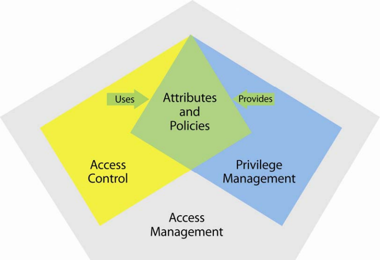
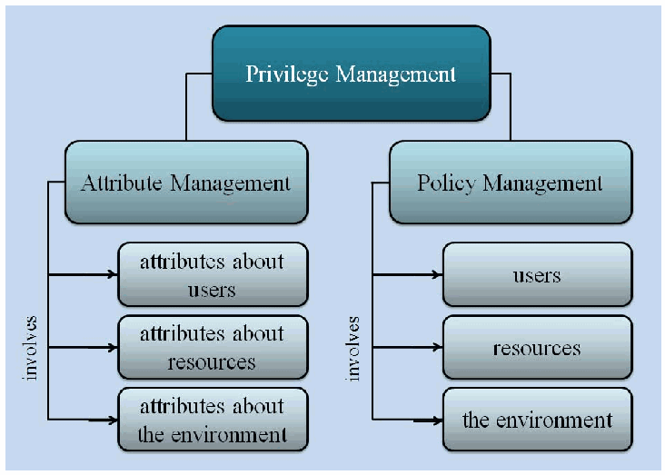

NIST IR 7657 日本語訳
英語タイトル : A Report on the Privilege (Access) Management Workshop日本語タイトル : 特権（アクセス）管理ワークショップに関する報告書
公開日 : 2010-03-30
原文URL : https://csrc.nist.gov/pubs/ir/7657/final
翻訳編集 : 自動生成（有志による非公式の日本語訳）, 原文取得日 : 2026-10-31, 訳文 : 307 / 310 ブロック
[要約] NIST IR 7657 は、2009 年 9 月 1 日から 3 日に NIST と国家安全保障局（NSA）の主催で開催された特権（アクセス）管理ワークショップでの議論と結論に基づく報告書です。ワークショップの参加者は、アクセス管理が特権管理を考える際の包括的な枠組みであるという点でおおむね一致し、本書は、エンタープライズレベルのアクセス制御と管理の全範囲の中での特権管理の位置づけを説明します。本書は、特権管理を考えるための文脈、定義と標準（XACML を中心とする）、アクセス制御の手法、ポリシーと要件、研究課題の各節で構成されています。議論は網羅的ではなく、主にワークショップでの発表と議論から導かれた考え方、論点、ギャップ、懸念事項を扱い、保証に関する考慮事項はワークショップの対象範囲から意図的に除外されていたため取り上げていません。
PDF から抽出した原文のうち 1 ブロックは原本との照合待ちです。
NISTIR 7657
NISTIR 7657
A Report on the Privilege (Access) Management Workshop
特権（アクセス）管理ワークショップに関する報告書
NIST/NSA
Privilege Management Conference Collaboration Team
NIST/NSA
特権管理会議連携チーム
［NIST のロゴ。公的な標章のため、この非公式サイトには掲載していません。原本 PDF を参照してください。］
NIST IR 7657
NIST IR 7657
A Report on the Privilege (Access) Management Workshop
特権（アクセス）管理ワークショップに関する報告書
NIST/NSA
Privilege (Access) Management Workshop Collaboration Team
NIST/NSA
特権（アクセス）管理ワークショップ連携チーム
March 2010
2010 年 3 月
［米国商務省の紋章。公的な標章のため、この非公式サイトには掲載していません。原本 PDF を参照してください。］
U. S. Department of Commerce
Gary Locke, Secretary
米国商務省
Gary Locke 長官
National Institute of Standards and Technology
Patrick D. Gallagher, Director
国立標準技術研究所（NIST）
Patrick D. Gallagher 所長
Certain commercial entities, equipment, or materials may be identified in this document in order to describe an experimental procedure or concept adequately. Such identification is not intended to imply recommendation or endorsement by the National Institute of Standards and Technology, nor is it intended to imply that the entities, materials, or equipment are necessarily the best available for the purpose.
実験の手順や概念を適切に説明するため、本書では特定の商業団体、機器、または材料に言及している場合があります。こうした言及は、国立標準技術研究所（NIST）による推奨または支持を意味するものではなく、また、それらの団体、材料、または機器が当該目的に最適であることを意味するものでもありません。
Preface
序文
This document is based on the discussions and conclusions of the Privilege (Access) Management Workshop held on 1-3 September 2009 at the Gaithersburg, Maryland, facilities of the National Institute of Standards and Technology (NIST), sponsored by NIST and the National Security Agency (NSA). This document includes additional material resulting from in-scope comments made by workshop participants and the public during the review periods for this document. An overview of the workshop is available in the published proceedings of the workshop. [NISTIR 7665 - Proceedings of the Privilege Management Workshop, September 1-3, 2009]
本書は、2009 年 9 月 1 日から 3 日にかけて、国立標準技術研究所（NIST）と国家安全保障局（NSA）の主催により、NIST のメリーランド州ゲイサーズバーグの施設で開催された特権（アクセス）管理ワークショップでの議論と結論に基づいています。本書には、本書の審査期間中にワークショップ参加者および一般から寄せられた、対象範囲内のコメントを受けて追加した内容も含まれています。ワークショップの概要は、公表されたワークショップの議事録で入手できます。[NISTIR 7665 - Proceedings of the Privilege Management Workshop, September 1-3, 2009]
Participants at the workshop generally agreed that access management is the umbrella under which to consider privilege management. At the same time, many workshop participants felt that the term “privilege management” was not needed at all, since all aspects of the discussions held in the various tracks could be described without use of the term. Yet, the term “privilege management” was being used in several contexts, with differing meanings, and there was a strong desire to clarify its meaning. Contributing to the reason to use the term was the definition of “privilege management” that appeared in the draft document1 produced by the Identity, Credential, and Access Management (ICAM) Subcommittee just months earlier [FICAM-09 -Federal Identity, Credential, and Access Management.] That proposed definition seemed to be closely related to the area being examined at the workshop. Also, the view of privilege management expressed in this document generally aligns with the architectural and service framework for privilege management presented in the FICAM document. Both the FICAM document and this report treat privilege management as a subset of access management.
ワークショップの参加者は、アクセス管理が、特権管理を考える際の包括的な枠組みであるという点でおおむね一致しました。同時に、多くの参加者は、各トラックで行われた議論のあらゆる側面を「特権管理」という用語を使わずに説明できるため、この用語はまったく必要ないと感じていました。しかし、「特権管理」という用語はさまざまな文脈で異なる意味で使われており、その意味を明確にしたいという強い要望がありました。この用語を使う理由の一つとなったのは、ほんの数か月前に ID・資格情報・アクセス管理（ICAM）小委員会が作成したドラフト文書1に「特権管理」の定義が示されていたことです [FICAM-09 -Federal Identity, Credential, and Access Management.]。この提案された定義は、ワークショップで検討された領域と密接に関連しているように見えました。また、本書で示す特権管理の見方は、FICAM 文書で示された特権管理のアーキテクチャおよびサービスのフレームワークとおおむね整合しています。FICAM 文書も本報告書も、特権管理をアクセス管理の部分集合として扱っています。
The results of the workshop, as described in this report, show that the central topic of the workshop turned out to be attribute and policy management. Whether attribute and policy management should be called “privilege management” is an open question at this point. Looking at the definitions of “privilege management” in the FICAM document and in this report, it appears that they address different levels of concern in the area of identity, credential, and access management. The FICAM definition appears to view privilege management as a governance and business process, while this report’s definition focuses on computer-based management of attributes and policies. As the reader can easily discover, it is possible to substitute “attribute and policy management” for “privilege management” throughout this report without damage to the content. The question arises, then, as to whether a definition of “privilege management” as found in the FICAM extends to the area of access management covered in this report or should be limited to the governance and business process level. It remains for future deliberations, such as a follow-on workshop, to examine the issues involved and resolve such questions.
本報告書で述べるワークショップの成果から、ワークショップの中心的な主題は、属性とポリシーの管理であったことがわかります。属性とポリシーの管理を「特権管理」と呼ぶべきかどうかは、現時点では未解決の問題です。FICAM 文書と本報告書における「特権管理」の定義を見ると、両者は ID・資格情報・アクセス管理の分野における異なる水準の関心事を扱っているようです。FICAM の定義は特権管理をガバナンスおよび業務プロセスとして捉えているように見えるのに対し、本報告書の定義はコンピューターを用いた属性とポリシーの管理に焦点を当てています。読者が容易に確認できるとおり、本報告書全体で「特権管理」を「属性とポリシーの管理」に置き換えても、内容は損なわれません。そこで、FICAM にある「特権管理」の定義が、本報告書で扱うアクセス管理の領域にまで及ぶのか、それともガバナンスおよび業務プロセスの水準に限定すべきなのかという疑問が生じます。関係する論点を検討し、このような疑問を解決することは、後続のワークショップなど今後の審議に委ねられています。
The discussion in this document is not comprehensive, dealing principally with those ideas, points, gaps, and concerns derived from presentations and discussions at the workshop. In particular, it does not address assurance issues associated with the topics covered because the workshop’s scope specifically excluded assurance considerations, in order to achieve a useful first step in exploring privilege management. We believe, however, that this report provides a good basis for further exploration of the topics and issues and, in particular, for a follow-on workshop.
本書の議論は網羅的ではなく、主にワークショップでの発表と議論から導かれた考え方、論点、ギャップ、懸念事項を扱っています。特に、ワークショップの対象範囲では、特権管理を探究する有益な第一歩とするため、保証に関する考慮事項が意図的に除外されていたので、扱った主題に関連する保証の問題は取り上げていません。しかし、本報告書は、これらの主題と問題をさらに探究するための、特に後続のワークショップのための、よい基礎になると考えています。
Table of Contents
目次
Annex F: Security Framework for Privilege Management
附属書 F: 特権管理のセキュリティフレームワーク
List of Figures and Tables
図表一覧
National Institute of Standards and Technology Interagency Report on the Privilege (Access) Management Workshop
国立標準技術研究所 特権（アクセス）管理ワークショップに関する省庁間報告書
Introduction
はじめに
This National Institute of Standards and Technology (NIST) Interagency Report (NISTIR) on the Privilege (Access) Management Workshop is organized as follows:
国立標準技術研究所（NIST）の省庁間報告書（NISTIR）である本書「特権（アクセス）管理ワークショップに関する報告書」は、次のように構成されています。
•A Context for Thinking About Privilege Management: This section describes the full scope of enterprise-level access control and management, showing how privilege management fits under the umbrella of access management.
•特権管理を考えるための背景: 本節では、エンタープライズレベルのアクセス制御と管理の全範囲を説明し、特権管理がアクセス管理という包括的な枠組みの中にどのように位置づけられるかを示します。
•Definitions and Standards: This section examines the need for definitions and standards, with a focus on eXtensible Access Control Markup Language (XACML).
•定義と標準: 本節では、定義と標準の必要性を検討し、特に eXtensible Access Control Markup Language（XACML）に焦点を当てます。
•Access Control Methods: This section identifies current, distinguishable access control methods and focuses on the attribute-based access control method.
•アクセス制御の方式: 本節では、現在使われている、互いに区別できるアクセス制御方式を特定し、属性ベースのアクセス制御方式に焦点を当てます。
•Policies and Requirements: This section presents considerations about digital policy management.
•ポリシーと要件: 本節では、デジタルポリシー管理に関する考慮事項を示します。
•Research Agenda: This section identifies issues in several topical areas of privilege management, including policy and attribute management, standards, and several others.
•研究課題: 本節では、ポリシーと属性の管理、標準など、特権管理のいくつかの主題分野における課題を特定します。
•Conclusion: This section gives a brief summary of the document and provides a list of recommendations.
•結論: 本節では、本書の簡潔な要約を述べ、推奨事項の一覧を示します。
•Bibliography: This section provides references and other recommended reading.
•参考文献: 本節では、参考文献およびその他の推奨される読み物を示します。
•Annex A: Authorization and Attributes Glossary
•附属書 A: 認可と属性の用語集
•Annex B: A Survey of Access Control
•附属書 B: アクセス制御の調査
•Annex C: Authoritative Attribute Source and Attribute Service Guidelines
•附属書 C: 権威ある属性ソースおよび属性サービスのガイドライン
•Annex D: Advanced Capabilities for Privilege Management
•附属書 D: 特権管理のための高度な機能
•Annex E: The Policy Machine
•附属書 E: ポリシーマシン
•Annex F: An Alternate View
•附属書 F: もう一つの見方
A Context for Thinking About Privilege Management
特権管理を考えるための背景
This section describes enterprise-level access control and privilege management, both of which come under the umbrella of access management. At the enterprise level, access management encompasses all the practices, policies, procedures, data, metadata, and technical and administrative mechanisms used to manage access to the resources of an organization. Access management includes access control and privilege management as well as other related capabilities such as identity management. Considering things at the enterprise level ensures that all elements of privilege management are included so that the needs of all organizations, large and small, can be met.
本節では、エンタープライズレベルのアクセス制御と特権管理について説明します。どちらもアクセス管理という包括的な枠組みの中にあります。エンタープライズレベルでは、アクセス管理は、組織のリソースへのアクセスを管理するために用いられる、あらゆる実務、ポリシー、手順、データ、メタデータ、技術的および管理的な仕組みを包含します。アクセス管理には、アクセス制御と特権管理のほか、ID 管理などの関連する機能も含まれます。エンタープライズレベルで考えることで、特権管理のすべての要素が確実に含まれ、大小を問わずあらゆる組織のニーズを満たすことができます。
Privilege management at the enterprise level is usefully viewed in relation to enterprise-level access control. Access control ensures that resources are made available only to authorized users, programs, processes, or systems by reference to rules of access that are defined by attributes and policies. Privilege management is the definition and management of attributes and policies that are used to decide whether a user’s request for access to some resource should be granted. In this context, resources can be both computer-based entities (files, Web pages, and so on) and physical entities (buildings, safes, and so on), and users requesting access to resources can be people, processes running on a computer, or devices. Please note that this description of privilege management is a working definition for the purposes of this report. Any definition, to be an approved, agreed-upon term, must go through a formal review process by bodies such as the Authorization and Attribute Services Committee (AASC) and NIST. As noted in the Preface of this report, work needs to be done to formalize any terminology beyond that being proposed by organized committees such as the Identity, Credential, and Access Management (ICAM) Subcommittee and the AASC.
エンタープライズレベルの特権管理は、エンタープライズレベルのアクセス制御との関係で捉えると有用です。アクセス制御は、属性とポリシーで定義されたアクセスの規則を参照することで、認可されたユーザー、プログラム、プロセス、またはシステムだけがリソースを利用できるようにします。特権管理は、あるリソースへのユーザーのアクセス要求を許可すべきかどうかを判断するために用いられる、属性とポリシーの定義と管理です。この文脈では、リソースは、コンピューターベースの実体（ファイル、Web ページなど）と物理的な実体（建物、金庫など）のどちらもあり得ます。リソースへのアクセスを要求するユーザーは、人、コンピューター上で動作するプロセス、またはデバイスのいずれもあり得ます。なお、この特権管理の説明は、本報告書の目的のための暫定的な定義です。いかなる定義も、承認され合意された用語となるためには、Authorization and Attribute Services Committee（AASC）や NIST などの機関による正式な審査プロセスを経なければなりません。本報告書の序文で述べたとおり、ID・資格情報・アクセス管理（ICAM）小委員会や AASC といった組織された委員会が提案している用語を超えて、用語を正式に定めるには、さらなる作業が必要です。
To have a clear notion of the meaning and scope of privilege management, we start by considering how access control works at a high level, as shown in Figure 1.
特権管理の意味と範囲を明確に捉えるため、まず図 1 に示すように、アクセス制御が高い水準でどのように機能するかを考えることから始めます。
![Block diagram of access control. "Access Request Provider" sends a "request" down to "Access Controller", which returns "“yes” or “no”" to it. "Access Control Data" feeds up into "Access Controller". Notes beside each box: "The Access Request Provider* assembles relevant information (who are you?, what do you want?, . . .) into a request for access and gives it to the Access Controller"; "The Access Controller gets information about the user requesting access, about the resource to which access is requested, about organizational policies, and so on to make a “yes” or “no” decision"; "The Access Control Data provides all the relevant information needed by the Access Controller to make a decision". Footnote in the figure: "* The Access Request Provider is a process acting on behalf of a user or itself."](assets/ir-7657/p0009-figure-01.png)
アクセス制御のブロック図です。「Access Request Provider」（アクセス要求提供者）が「Access Controller」（アクセス制御器）へ「request」（要求）を送り、アクセス制御器は「“yes” or “no”」（許可または拒否）を返します。「Access Control Data」（アクセス制御データ）がアクセス制御器へ情報を渡します。各箱の横に説明があります。アクセス要求提供者は関連情報（あなたは誰か、何をしたいか、など）をアクセス要求にまとめてアクセス制御器へ渡します。アクセス制御器は、アクセスを要求する利用者、アクセス対象の資源、組織のポリシーなどの情報を得て許可・拒否を決めます。アクセス制御データは、アクセス制御器が判断に必要とするすべての関連情報を提供します。図中の注には「アクセス要求提供者は、利用者のため、または自身のために動作するプロセスである」とあります。
Figure 1. High-Level View of Access Control
図 1. アクセス制御の概要図
Figure 2 depicts the real-time framework for access control in more detail, introducing terminology that is used in this report.
図 2 は、アクセス制御のリアルタイムのフレームワークをより詳細に示し、本報告書で用いる用語を導入しています。
![Diagram of real-time access control. "Access Request Provider [User, Operation, Resource]" sends a request (1) to "Policy Enforcement Point", which passes it (2) to "Policy Decision Point"; the decision returns (3) to the Policy Enforcement Point. The Access Request Provider and the Policy Enforcement Point have dashed "access/reference" links to "Identity and Credential Information"; the Policy Decision Point has an "access/reference" link to "Attribute and Policy Information". A dashed callout from the request explains: "User: an authenticated user; Operation: the form of access that is requested; Resource: the resource to which access is requested".](assets/ir-7657/p0009-figure-02.png)
リアルタイムのアクセス制御の図です。「Access Request Provider [User, Operation, Resource]」（アクセス要求提供者［利用者、操作、資源］）が要求（1）を「Policy Enforcement Point」（ポリシー施行点）へ送り、ポリシー施行点はそれ（2）を「Policy Decision Point」（ポリシー決定点）へ渡し、決定（3）がポリシー施行点へ戻ります。アクセス要求提供者とポリシー施行点は破線の「access/reference」（参照）で「Identity and Credential Information」（識別・クレデンシャル情報）とつながり、ポリシー決定点は「access/reference」で「Attribute and Policy Information」（属性・ポリシー情報）とつながっています。要求から引いた吹き出しには「利用者: 認証済みの利用者、操作: 要求するアクセスの形態、資源: アクセスを要求する対象の資源」とあります。
Figure 2. High-Level View of Real-Time Access Control
図 2. リアルタイムのアクセス制御の概要図
In Figure 2, the Access Controller of Figure 1 is split into two parts—Policy Enforcement Point and Policy Decision Point—and Attribute and Policy Information replaces Access Control Data. The meanings of the Policy Enforcement Point and Policy Decision Point (as described in Annex A: Authorization and Attributes Glossary) are as follows:
図 2 では、図 1 のアクセスコントローラーが、ポリシー実施ポイントとポリシー決定ポイントの 2 つの部分に分割され、アクセス制御データが、属性・ポリシー情報に置き換えられています。ポリシー実施ポイントとポリシー決定ポイントの意味は（附属書 A: 認可と属性の用語集に記載のとおり）次のとおりです。
•Policy Decision Point (PDP): A system entity that makes authorization decisions for itself or for other system entities that request such decisions.
•ポリシー決定ポイント（PDP）: 自身のために、または、認可決定を要求する他のシステムエンティティのために、認可決定を行うシステムエンティティ。
•Policy Enforcement Point (PEP): A system entity that requests and subsequently enforces authorization decisions.
•ポリシー実施ポイント（PEP）: 認可決定を要求し、その後これを実施するシステムエンティティ。
“Attribute and policy information” is being used in a very general sense and is intended to have the same scope as access control data. Thus, it includes any form of information that can be used for access control. For example, it includes traditional access control lists (ACLs.) For an ACL, the attribute might be a group or user name while the policy2 is implicit. In this context, “policy” denotes digital policy—policy that can be processed by computer. The rationale for this scope of the terminology is to enable discussion without having to deal with the details of the many forms of access control data, while at the same time distinguishing the main categories of access control data—attributes and policies.
「属性・ポリシー情報」は非常に一般的な意味で用いられており、アクセス制御データと同じ範囲を指すことを意図しています。したがって、アクセス制御に使用できるあらゆる形式の情報を含みます。たとえば、従来のアクセス制御リスト（ACL）も含まれます。ACL の場合、属性はグループ名やユーザー名であり、ポリシー2は暗黙的です。この文脈では、「ポリシー」はデジタルポリシー、すなわちコンピューターで処理できるポリシーを意味します。この用語の範囲を定める理由は、アクセス制御データの多くの形式の詳細に立ち入ることなく議論できるようにしつつ、アクセス制御データの主な区分である属性とポリシーを区別するためです。
A user is a person, process, or device. The term “user” is defined for the context of this report, as suggested by RFC 4949, and shares connotations of meaning with the terms “subject,” “system entity,” and “system user” as defined in RFC 4949 and with the terms “subject” and “user” as defined in CNSSI-4009. Attributes are distinguishable characteristics of users or resources, conditions defined by an authority, or aspects of the environment. Attributes might provide, describe, or be contact information, membership in communities of interest, roles within a community of interest, sensitivity of data, permission bits, location of the user or the resource, properties of the user session, conditions in the enterprise network or in the environment, priorities associated with individuals, status of resources, current bank account balance, and so on. Policies are rules that specify how to use attributes to render an access decision. A policy might specify that a user’s signature authority must equal or exceed signature-level-two in order for the user to authorize a monetary account withdrawal.
ユーザーとは、人、プロセス、またはデバイスです。「ユーザー」という用語は、RFC 4949 の示唆に従って本報告書の文脈で定義したものであり、RFC 4949 で定義されている「サブジェクト」「システムエンティティ」「システムユーザー」という用語、および CNSSI-4009 で定義されている「サブジェクト」「ユーザー」という用語と、意味の含みを共有しています。属性とは、ユーザーまたはリソースの区別可能な特性、権威者が定義した条件、あるいは環境の側面です。属性は、連絡先情報、関心共同体への所属、関心共同体内での役割、データの機微度、パーミッションビット、ユーザーまたはリソースの所在地、ユーザーセッションの特性、エンタープライズネットワークまたは環境の状況、個人に関連付けられた優先度、リソースの状態、現在の銀行口座残高などを提供したり、記述したり、あるいはそれ自体であったりする場合があります。ポリシーとは、アクセス決定を下すために属性をどのように使用するかを指定する規則です。たとえば、ユーザーが口座からの引き出しを認可するには、そのユーザーの署名権限が署名レベル 2 以上でなければならない、とポリシーで指定する場合があります。
The view of real-time access shown in Figure 2 does not reflect assurance mechanisms and other entities that might enter into the activity, except for the high-level reference to credentials. So, for example, in a real system, the policy enforcement point might use a credential validation service to convert authorization credentials3 into attributes that it then provides to the policy decision point. As noted in the Preface, however, assurance is not being addressed in this document.
図 2 に示すリアルタイムのアクセスの見方は、資格情報への高い水準での言及を除き、保証の仕組みや、その活動に関与し得るその他のエンティティを反映していません。そのため、たとえば実際のシステムでは、ポリシー実施ポイントが資格情報検証サービスを使って、認可資格情報3を属性に変換し、それをポリシー決定ポイントに提供する場合があります。ただし、序文で述べたとおり、本書では保証を扱いません。
As suggested in Figure 2, the Access Request Provider uses identity and credential information that is relevant to the context in which the request is being made. The level of trust associated with the identity’s credentials can vary widely as can the form of the credentials, and the same holds true for attribute and policy information. In addition, the policy enforcement point may access (pull) credential information as well as having it provided to it (pushed) (see, for example, RFC 3281).
図 2 に示すように、アクセス要求プロバイダーは、要求が行われる文脈に関連する ID 情報と資格情報を使用します。ID の資格情報に関連付けられる信頼のレベルは、資格情報の形式と同様に大きく異なり得ますし、属性・ポリシー情報についても同じことが言えます。さらに、ポリシー実施ポイントは、資格情報を提供される（プッシュされる）だけでなく、資格情報にアクセスする（プルする）場合もあります（たとえば RFC 3281 を参照）。
The question naturally arises, “Where does privilege management fit in this view?” The attribute and policy information must be created and maintained, and this is the business of privilege management. Similarly, the identity and credential information is the business of authentication management. This is depicted in Figure 3.
当然のことながら、「この見方で、特権管理はどこに位置づけられるのか」という疑問が生じます。属性・ポリシー情報は作成され、維持されなければなりません。これが特権管理の役割です。同様に、ID・資格情報は認証管理の役割です。これを図 3 に示します。
![Diagram extending Figure 2. "Access Request Provider [User, Operation, Resource]" sends a request to "Policy Enforcement Point", which exchanges with "Policy Decision Point". Dotted links connect the Access Request Provider and the Policy Enforcement Point to "Identity and Credential Information", and the Policy Decision Point to "Attribute and Policy Information". A wide arrow from "Authentication Management" points up to "Identity and Credential Information", and a wide arrow from "Privilege Management" points up to "Attribute and Policy Information".](assets/ir-7657/p0011-figure-01.png)
図2を拡張した図です。「Access Request Provider [User, Operation, Resource]」（アクセス要求提供者）が「Policy Enforcement Point」（ポリシー施行点）へ要求を送り、ポリシー施行点は「Policy Decision Point」（ポリシー決定点）とやり取りします。点線で、アクセス要求提供者とポリシー施行点が「Identity and Credential Information」（識別・クレデンシャル情報）に、ポリシー決定点が「Attribute and Policy Information」（属性・ポリシー情報）につながっています。「Authentication Management」（認証管理）から識別・クレデンシャル情報へ、「Privilege Management」（特権管理）から属性・ポリシー情報へ、それぞれ太い矢印が向いています。
Figure 3. Authentication Management and Privilege Management
図 3. 認証管理と特権管理
Authentication management deals with identities, credentials, and any other authentication data needed to establish an identity.4 Privilege management creates, stores, and manages the attributes and policies needed to establish criteria that can be used to decide whether a user’s request for access to some resource should be granted. Access control uses the data made available by authentication and privilege management, plus other information provided by the access request provider, such as the form of access requested, to make an access control decision.
認証管理は、ID、資格情報、および ID を確立するために必要なその他の認証データを扱います。4特権管理は、あるリソースへのアクセス要求を許可すべきかどうかを判断するために用いることができる基準を確立するために必要な、属性とポリシーを作成し、保存し、管理します。アクセス制御は、認証管理と特権管理によって利用可能になるデータに加え、要求されたアクセスの形式など、アクセス要求プロバイダーが提供するその他の情報を使って、アクセス制御の決定を行います。
Access management, which includes privilege management and access control, encompasses the science and technology of creating, assigning, storing, and accessing attributes and policies, of using those attributes and policies to decide whether a user’s request for access to a resource should be allowed or denied, and of enforcing the access control decision.
アクセス管理は、特権管理とアクセス制御を含み、属性とポリシーを作成し、割り当て、保存し、アクセスするための科学と技術、それらの属性とポリシーを使ってリソースへのユーザーのアクセス要求を許可するか拒否するかを判断するための科学と技術、およびアクセス制御の決定を実施するための科学と技術を包含します。
In the foregoing description:
上記の説明では、次のとおりです。
•“science” is included because many aspects of access management are amenable to scientific treatment, theory, and structure.
•「科学」を含めているのは、アクセス管理の多くの側面が、科学的な取り扱い、理論、および構造による検討になじむからです。
•“technology” is included because hardware and software for access management define actual usage and the state of the practice.
•「技術」を含めているのは、アクセス管理のためのハードウェアとソフトウェアが、実際の利用と実務の現状を規定するからです。
Figure 4 shows a high-level view5 of the relationships among access management, access control, privilege management, and attributes and policies.
図 4 は、アクセス管理、アクセス制御、特権管理、および属性とポリシーの関係の概要図5を示しています。

ベン図ふうの図です。灰色の五角形「Access Management」（アクセス管理）の中で、黄色の「Access Control」（アクセス制御）と青の「Privilege Management」（特権管理）が重なり、重なった緑の三角形が「Attributes and Policies」（属性とポリシー）です。アクセス制御から属性とポリシーへ「Uses」（使用します）の矢印、特権管理から属性とポリシーへ「Provides」（提供する）の矢印が向いています。
Figure 4. High-Level View of Relationships as a Venn Diagram
図 4. ベン図による関係の概要図
Privilege management, which is the focus of this report, can usefully be viewed in more detail, as shown in Figure 5.
本報告書の焦点である特権管理は、図 5 に示すように、より詳細に捉えると有用です。

階層図です。「Privilege Management」（特権管理）が「Attribute Management」（属性管理）と「Policy Management」（ポリシー管理）に分かれます。属性管理には「attributes about users」（利用者の属性）、「attributes about resources」（資源の属性）、「attributes about the environment」（環境の属性）の3つが含まれます。ポリシー管理には「users」（利用者）、「resources」（資源）、「the environment」（環境）の3つが含まれます。
Figure 5. Information Managed by Privilege Management
図 5. 特権管理が管理する情報
As depicted in Figure 5, privilege management is conceptually split into two parts—attribute management and policy management—since they might have differing governance. Policy, for example, might be managed at a higher level of an enterprise than attribute management. They are also different kinds of entities or structures, to which different standards apply. Attributes are characteristics of entities, while policies are rules that specify how to use attributes in making an access control decision. Attributes describe aspects of people, resources, and environments. Some attributes are basic (who or what an entity is) and some might be enterprise-specific (the current balance in a savings account or the country that a client is in at the moment). Some attributes that we can think of may be beyond the state of the practice. Such attributes can be input to identification of needed research. Policies describe the rules that a policy decision point uses to determine whether a request should be granted. Policies can range from simple to complex. An example of a simple policy is the requirement that a requester’s clearance equal or exceed the classification of the requested resource. An example of a complex policy in a military context is the requirement that a requester’s clearance equal or exceed the classification of the requested resource, that the requester has a documented need-to-know with regard to that resource, that the Information Operations Condition [INFOCON] level6 is at 3, 4, or 5, and that the Defense Readiness Condition [DEFCON] level is at 3, 2, or 1. The same kind of policy, but in a banking context, might be stated as follows: A bank employee’s request for access to a customer’s account is granted if the bank employee is at least a branch manager, there is a certified record of need-to-know, and the account has not been locked due to a regulatory issue.
図 5 に示すように、特権管理は概念上、属性管理とポリシー管理の 2 つの部分に分けられます。両者はガバナンスが異なる場合があるためです。たとえば、ポリシーは、属性管理よりもエンタープライズの上位の水準で管理される場合があります。両者は、異なる種類のエンティティまたは構造でもあり、適用される標準も異なります。属性はエンティティの特性であり、ポリシーはアクセス制御の決定を行う際に属性をどのように使用するかを指定する規則です。属性は、人、リソース、環境の側面を記述します。属性には、基本的なもの（エンティティが誰または何であるか）もあれば、エンタープライズ固有のもの（普通預金口座の現在の残高や、クライアントが現時点でいる国など）もあります。考えられる属性の中には、実務の現状を超えるものもあるでしょう。そのような属性は、必要な研究を特定するための入力になり得ます。ポリシーは、ポリシー決定ポイントが要求を許可すべきかどうかを判断するために用いる規則を記述します。ポリシーは単純なものから複雑なものまでさまざまです。単純なポリシーの例は、要求者のクリアランスが、要求されたリソースの機密区分以上であることを求める要件です。軍事の文脈での複雑なポリシーの例は、要求者のクリアランスが要求されたリソースの機密区分以上であること、要求者がそのリソースに関して文書化された Need-to-know を持っていること、情報作戦態勢 [INFOCON] のレベル6が 3、4、または 5 であること、防衛準備態勢 [DEFCON] のレベルが 3、2、または 1 であることを求める要件です。同じ種類のポリシーを銀行の文脈で述べると、次のようになるでしょう。銀行員による顧客口座へのアクセス要求は、その銀行員が少なくとも支店長であり、need-to-know の認証済み記録があり、口座が規制上の問題でロックされていない場合に許可されます。
Partitioning attribute management into three parts—management of user attributes, management of resource attributes, and management of environment attributes—is also a conceptual partitioning for two reasons: First, to make clear that attribute management must address all the elements that go into making a decision; and second, because the three elements—user, resource, and environment—are recognizably different entities. Similarly, policy management may involve rules about users, resources, the environment, or any combination to define access control policies.
属性管理を、ユーザー属性の管理、リソース属性の管理、環境属性の管理の 3 つに分けることも、2 つの理由による概念上の区分です。第 1 に、属性管理が、決定に関わるすべての要素を扱わなければならないことを明確にするためです。第 2 に、ユーザー、リソース、環境という 3 つの要素が、明らかに異なるエンティティだからです。同様に、ポリシー管理も、アクセス制御ポリシーを定義するために、ユーザー、リソース、環境、またはそれらの任意の組み合わせに関する規則を含む場合があります。
Another way to decompose attribute/policy management is by functionality. Both attribute and policy management must provide governance, provisioning, and access.
属性・ポリシー管理を分解するもう一つの方法は、機能による分解です。属性管理とポリシー管理はどちらも、ガバナンス、プロビジョニング、およびアクセスを提供しなければなりません。
•Governance: deciding which attributes and policies are needed to control access to what resources by which users. Since provisioning can be expensive, selection of attributes and policies should be done with careful consideration of the entities to be covered. Governance decisions involve judgment based on enterprise needs, weighing costs and benefits.
•ガバナンス: どのユーザーがどのリソースにアクセスするのを制御するために、どの属性とポリシーが必要かを決定すること。プロビジョニングにはコストがかかる場合があるため、属性とポリシーの選定は、対象とするエンティティを慎重に考慮したうえで行うべきです。ガバナンスの決定には、エンタープライズのニーズに基づく判断が伴い、コストと便益を比較検討します。
•Provisioning: defining the attributes and policies, including semantics and representations, and instantiating them.
•プロビジョニング: セマンティクスと表現を含め、属性とポリシーを定義し、インスタンス化すること。
•Access: providing for storage and retrieval of attributes and policies. This can be complex but is a generic data management task.
•アクセス: 属性とポリシーの保存と取得を提供すること。これは複雑になり得ますが、汎用的なデータ管理のタスクです。
An important aspect of privilege management is the way it interfaces to the rest of the world and, in particular, to the access control components of an enterprise. Standards for interfaces are particularly powerful, providing flexibility in configuring functionality, wider choice of vendors, and upgradability without disruption when properly implemented.
特権管理の重要な側面は、外部、特にエンタープライズのアクセス制御コンポーネントとのインターフェースのあり方です。インターフェースの標準は、適切に実装されれば、機能の構成に柔軟性をもたらし、ベンダーの選択肢を広げ、中断なしにアップグレードできるようにするため、特に強力です。
In the next two figures, activity is partitioned into real-time activity and administrative-time activity. Another way to think of this partitioning is as shown earlier in Figure 4: access control uses and privilege management provides attributes and policies. Also, as shown in Figure 7, privilege management may participate in the real-time activity.
次の 2 つの図では、活動をリアルタイムの活動と管理時の活動に分けています。この区分は、先の図 4 に示したように、アクセス制御が属性とポリシーを使用し、特権管理がそれらを提供する、と考えることもできます。また、図 7 に示すように、特権管理がリアルタイムの活動に関与する場合もあります。
There are two basic ways to view the interfaces of privilege management within the context of access control. One way is shown in Figure 6, in which the interfaces are depicted as double-headed wide arrows inside the area marked as “administrative time activity.”
アクセス制御の文脈の中で特権管理のインターフェースを捉える基本的な方法は 2 つあります。1 つは図 6 に示すもので、インターフェースを、「管理時の活動」と記された領域の内側にある、両方向の太い矢印として描いています。
![Diagram split into a "real-time activity" area and an "administrative-time activity" area. In the real-time area, "Access Request Provider" sends a request (1) to "Policy Enforcement Point", which passes it (2) to "Policy Decision Point"; the Policy Decision Point has "access" (3) to "Attribute and Policy Information", and the decision returns (4) to the Policy Enforcement Point. "Attribute and Policy Information" lies on the boundary between the two areas. In the administrative-time area, labeled "creation and maintenance of data", a box "Policy and Attribute Administration Point" contains "Administrator" and "Privilege Management" joined by a double-headed wide arrow; another double-headed wide arrow joins Privilege Management and Attribute and Policy Information.](assets/ir-7657/p0015-figure-01.png)
「real-time activity」（リアルタイムの活動）と「administrative-time activity」（管理時の活動）の2つの領域に分けた図です。リアルタイムの領域では、「Access Request Provider」（アクセス要求提供者）が要求（1）を「Policy Enforcement Point」（ポリシー施行点）へ送り、ポリシー施行点はそれ（2）を「Policy Decision Point」（ポリシー決定点）へ渡します。ポリシー決定点は「Attribute and Policy Information」（属性・ポリシー情報）を参照（3、access）し、決定（4）がポリシー施行点へ戻ります。属性・ポリシー情報は2つの領域の境目にあります。管理時の領域（「creation and maintenance of data」、データの作成と維持）には「Policy and Attribute Administration Point」（ポリシー・属性管理点）の枠があり、その中の「Administrator」（管理者）と「Privilege Management」（特権管理）が両向きの太い矢印で結ばれています。特権管理と属性・ポリシー情報も両向きの太い矢印で結ばれています。
Figure 6. Interfaces of Privilege Management – View One
図 6. 特権管理のインターフェース – ビュー 1
In this architecture, the policy decision point accesses the information it needs directly in the relevant information stores. That information is created, maintained, and placed there by the privilege management system. Thus, privilege management interfaces to the attribute and policy information repository, or repositories, but does not interface to the policy decision point. The other interface, between administrator and privilege management,7 supports the human-computer interface. The administrator is shown as a separate entity to make explicit the human-computer interface; as implemented, the administrator’s functions might be an integral part of the privilege management system, might be on a dedicated workstation, might be realized through a Web interface, and so on. Also, “administrator” should be understood to represent also a system user who can change access privileges on a system having a discretionary access control mechanism.
このアーキテクチャでは、ポリシー決定ポイントが、必要な情報に、関連する情報ストアで直接アクセスします。その情報は、特権管理システムによって作成、維持され、そこに置かれます。したがって、特権管理は、属性・ポリシー情報のリポジトリ（複数の場合もあります）とはインターフェースを持ちますが、ポリシー決定ポイントとはインターフェースを持ちません。もう一つのインターフェースである管理者と特権管理の間のもの7は、ヒューマンコンピューターインターフェースを支えます。管理者は、ヒューマンコンピューターインターフェースを明示するために別のエンティティとして示されています。実装上は、管理者の機能が特権管理システムの不可分な一部である場合もあれば、専用のワークステーション上にある場合も、Web インターフェースを通じて実現される場合もあります。また、「管理者」は、任意アクセス制御の仕組みを持つシステムでアクセス権限を変更できるシステムユーザーも表すものと解釈すべきです。
This architecture has features worth noting:
このアーキテクチャには、注目すべき特徴があります。
•The information needed by the policy decision point can be efficiently obtained; for example, all stores8 might be of the same type and might be directly, locally accessible.
•ポリシー決定ポイントが必要とする情報は、効率的に取得できる場合があります。たとえば、すべてのストア8が同じ種類で、ローカルから直接アクセスできる場合があります。
•The management system has a single role to play; in addition, it can manage information in multiple stores of different types.
•管理システムが果たす役割は 1 つだけです。加えて、異なる種類の複数のストアにある情報を管理できます。
•Compared to the next architecture, fewer interfaces are involved; thus, fewer standards are needed.
•次のアーキテクチャと比べて、関わるインターフェースが少なく、したがって必要な標準も少なくなります。
A second way to view the interfaces of privilege management within the context of access control is shown in Figure 7. The interfaces are again shown as double-headed wide arrows.
アクセス制御の文脈の中で特権管理のインターフェースを捉えるもう 1 つの方法を、図 7 に示します。ここでもインターフェースは、両方向の太い矢印として示されています。
![Diagram split into a "real-time activity" area and an "administrative-time activity" area. "Access Request Provider" sends a request (1) to "Policy Enforcement Point", which passes it (2) to "Policy Decision Point". The Policy Decision Point sends "3 request" to "Privilege Management" and receives "5 response" over a double-headed wide arrow. Privilege Management has "4 access" to "Attribute and Policy Information" over another double-headed wide arrow, and the decision returns (6) to the Policy Enforcement Point. "Privilege Management" and "Administrator" (joined by a double-headed wide arrow) sit in a box labeled "Policy and Attribute Administration Point"; the administrative-time area is labeled "creation and maintenance of data". Privilege Management and Attribute and Policy Information also lie inside the dashed real-time boundary.](assets/ir-7657/p0016-figure-01.png)
「real-time activity」（リアルタイムの活動）と「administrative-time activity」（管理時の活動）の2つの領域に分けた図です。「Access Request Provider」（アクセス要求提供者）が要求（1）を「Policy Enforcement Point」（ポリシー施行点）へ送り、ポリシー施行点はそれ（2）を「Policy Decision Point」（ポリシー決定点）へ渡します。ポリシー決定点は両向きの太い矢印で「Privilege Management」（特権管理）へ「3 request」（要求）を送り「5 response」（応答）を受け取ります。特権管理は両向きの太い矢印で「Attribute and Policy Information」（属性・ポリシー情報）を参照（4 access）し、決定（6）がポリシー施行点へ戻ります。特権管理と「Administrator」（管理者）は両向きの太い矢印で結ばれ、「Policy and Attribute Administration Point」（ポリシー・属性管理点）の枠の中にあります。管理時の領域には「creation and maintenance of data」（データの作成と維持）とあります。特権管理と属性・ポリシー情報は、リアルタイムの領域を示す破線の内側にも入っています。
Figure 7. Interfaces of Privilege Management – View Two
図 7. 特権管理のインターフェース – ビュー 2
In this architecture, the policy decision point sends a request for information to the privilege management system, which acts as a retrieval agent for the policy decision point.
このアーキテクチャでは、ポリシー決定ポイントが特権管理システムに情報の要求を送り、特権管理システムは、ポリシー決定ポイントのための取得エージェントとして動作します。
This architecture has features worth noting:
このアーキテクチャには、注目すべき特徴があります。
•The policy decision point need not have any knowledge of the stores9 in which the information it needs is kept; the stores can be of any type and information for a given class of information can even be kept in multiple, different stores.
•ポリシー決定ポイントは、必要な情報が保管されているストア9について何も知る必要がありません。ストアはどの種類でもよく、ある種類の情報を、複数の異なるストアに保管することさえできます。
•A single privilege management system can provide its services to multiple policy decision points.
•1 つの特権管理システムが、複数のポリシー決定ポイントにサービスを提供できます。
•Real-time inputs to the policy decision point can also be provided by the privilege management system; in the first architecture, the policy decision point would have to obtain such inputs, complicating its functionality.
•ポリシー決定ポイントへのリアルタイムの入力も、特権管理システムが提供できます。最初のアーキテクチャでは、ポリシー決定ポイントがそうした入力を自ら取得しなければならず、その機能が複雑になります。
Advantages and disadvantages of these architectures depend on factors in the context in which the architectures are applied: for example, how they are implemented, what supporting infrastructure is available, and what organizational policies come into play. Implementation of either of these architectures, and any variants of them, would clearly benefit from appropriate interface standards. Standardized interfaces would facilitate integration of products from various vendors.
これらのアーキテクチャの長所と短所は、アーキテクチャを適用する文脈の要因によって決まります。たとえば、どのように実装されるか、どのような支援基盤が利用できるか、どのような組織のポリシーが関わるか、といった要因です。どちらのアーキテクチャの実装も、またそれらの変種の実装も、適切なインターフェース標準があれば明らかに利点が得られます。標準化されたインターフェースは、さまざまなベンダーの製品の統合を容易にします。
Managing and accessing attributes, which is central to any architecture, can be considered a data management capability. At the enterprise level, system management budgets, flexibility, robustness, performance, and correctness are major risk factors for organizations. The risk can be ameliorated by use of proven data management systems. Managing and accessing attributes at the enterprise level is functionality that generally should not be included in each policy decision point or privilege management system. Instead, like a directory, it can be provided by a data management capability that is shared among many policy decision points, as in Figure 5, and many privilege management systems, as in Figure 6. Such an approach insulates policy decision points and privilege management systems from the complexities of the potentially many stores supporting attribute management and access. Consumers—that is, policy decision points and privilege management systems—have a logical view, and the underlying data management system maps to the physical stores, caches, and services that return the attribute data. Management of attributes must also deal with the issues arising from multiple values of attributes having the same name. Again, translating and mapping multiple instantiations of the same attribute is better done as part of a data management capability rather than by individual policy decision points.
あらゆるアーキテクチャの中心となる、属性の管理とアクセスは、データ管理の能力と考えることができます。エンタープライズレベルでは、システム管理の予算、柔軟性、堅牢性、性能、正確性が、組織にとっての主要なリスク要因です。実績のあるデータ管理システムを使うことで、このリスクを軽減できます。エンタープライズレベルでの属性の管理とアクセスは、一般に、個々のポリシー決定ポイントや特権管理システムに含めるべきではない機能です。そうではなく、ディレクトリと同様に、図 5 のように多数のポリシー決定ポイントで、また図 6 のように多数の特権管理システムで共有されるデータ管理の能力として提供できます。このような方法により、ポリシー決定ポイントと特権管理システムは、属性管理とアクセスを支える、場合によっては多数にのぼるストアの複雑さから切り離されます。利用者、すなわちポリシー決定ポイントと特権管理システムは論理的なビューを持ち、基盤となるデータ管理システムが、属性データを返す物理的なストア、キャッシュ、サービスへ対応付けを行います。属性の管理では、同じ名前の属性が複数の値を持つことから生じる問題にも対処しなければなりません。この場合も、同じ属性の複数のインスタンス化の変換と対応付けは、個々のポリシー決定ポイントではなく、データ管理の能力の一部として行うほうが適切です。
The foregoing discussion sets the stage for considering the following topics—definitions and standards, access methods, policies, and research agenda.
以上の議論は、次の主題、すなわち定義と標準、アクセスの方式、ポリシー、研究課題を検討するための土台となります。
Definitions and Standards
定義と標準
The ability to control access to sensitive data in accordance with policy is a fundamental security requirement. Definitions enable discourse and standards facilitate implementation in support of enterprise-level access management and privilege management in particular.
機微なデータへのアクセスをポリシーに従って制御する能力は、基本的なセキュリティ要件です。定義は議論を可能にし、標準は、エンタープライズレベルのアクセス管理、特に特権管理を支える実装を促進します。
Definitions generally in use, as in NISTIR-7298 Glossary of Key Information Security Terms and those explicitly referenced in Annex A: Authorization and Attributes Glossary, serve the purpose of effective discourse. However, no generally accepted definition of privilege management appears to be in use. The Identity, Credential, and Access Management (ICAM) Subcommittee of the Federal Information Security & Identity Management Committee is developing implementation guidance for access management, which includes a draft definition of privilege management, as follows:
NISTIR-7298 Glossary of Key Information Security Terms のように一般に使われている定義や、附属書 A: Authorization and Attributes Glossary で明示的に参照されている定義は、効果的な議論という目的に役立ちます。しかし、特権管理について一般に受け入れられている定義は使われていないようです。Federal Information Security & Identity Management Committee の Identity, Credential, and Access Management（ICAM）Subcommittee は、アクセス管理の実装ガイダンスを策定しており、その中には、次のような特権管理の定義案が含まれています。
“Privilege Management is the definition and management of policies and processes that define the ways in which the user is provided access rights to enterprise systems. It governs the management of the data that constitutes the user’s privileges and other attributes, including the storage, organization and access to information in directories.” [FICAM-09]
「特権管理（Privilege Management）とは、ユーザーにエンタープライズシステムへのアクセス権を付与する方法を定めるポリシーとプロセスの定義と管理です。特権管理は、ユーザーの特権およびその他の属性を構成するデータの管理を統制し、これにはディレクトリ内の情報の保存、整理、アクセスが含まれます。」[FICAM-09]
This definition is in accord with the view taken in this report; some architectural details in the referenced document relative to privilege management differ. Both this report and the referenced document view privilege management as one part of a larger access management capability.
この定義は本報告書の見方と一致しています。参照した文書にある特権管理に関するアーキテクチャの詳細の一部は異なります。本報告書も参照した文書も、特権管理を、より大きなアクセス管理の能力の一部と見ています。
The eXtensible Access Control Markup Language (XACML10), an OASIS11 standard for managing access control policy, provides some of what is needed to support enterprise-level privilege management. It includes a policy language and a query language that results in a Permit, Deny, Intermediate (error in query), or Not Applicable response. XACML queries, which are typically in the Security Assertion Markup Language (SAML) format, are sent to a Policy Enforcement Point (PEP), located at the file server or Web server, which forms a request to the Policy Decision Point (PDP). The PDP determines the answer based on policy and sends back its determination to the PEP. Both the PEP and PDP might be the same application in the same server or distributed across a network.
アクセス制御ポリシーを管理するための OASIS11 標準である eXtensible Access Control Markup Language（XACML10）は、エンタープライズレベルの特権管理を支えるために必要なものの一部を提供しています。XACML には、ポリシー言語と、Permit、Deny、Intermediate（クエリのエラー）、または Not Applicable の応答を返すクエリ言語が含まれています。XACML のクエリは、通常は Security Assertion Markup Language（SAML）形式で、ファイルサーバーまたは Web サーバーにあるポリシー実施ポイント（PEP）に送られ、PEP はポリシー決定ポイント（PDP）への要求を作成します。PDP は、ポリシーに基づいて回答を決定し、その判断を PEP に返します。PEP と PDP は、同じサーバー内の同じアプリケーションである場合もあれば、ネットワーク上に分散している場合もあります。
XACML does not define the following:
XACML は、次のものを定義していません。
•Creation and maintenance of policy;
•ポリシーの作成と維持
•Policy enforcement;
•ポリシーの実施
•Attribute collection, maintenance, and retrieval;
•属性の収集、維持、取得
•Resource attributes; and
•リソース属性
•Authority delegation and trust management.
•権限委譲と信頼管理
Both technical standards and processes for privilege management need further research and development. One area of concern is life cycle management and governance for attributes.
特権管理のための技術標準とプロセスの両方に、さらなる研究開発が必要です。懸念される領域の一つは、属性のライフサイクル管理とガバナンスです。
Consider the attribute class called “organization.” If free form text is allowed, one Air Force instantiation might be “USAF,” another might be “Air Force,” and another might be “US Air Force.” Policy logic cannot handle every possible value that might be used. What is needed is a manageable set of attributes and their values as well as a way to add new ones—in other words, governance. Without governance over attributes, policies that use them can become intractable.
「組織」という属性クラスを考えてみます。自由形式のテキストが許される場合、空軍のあるインスタンス化は「USAF」、別のものは「Air Force」、さらに別のものは「US Air Force」となるかもしれません。ポリシーのロジックは、使われる可能性のあるすべての値を扱うことはできません。必要なのは、管理可能な属性とその値の集合、およびそれらを新たに追加する方法、つまりガバナンスです。属性に対するガバナンスがなければ、それらを使用するポリシーは扱いきれなくなる可能性があります。
Access Control Methods
アクセス制御の方式
This section discusses access control methods and systems and identifies a number of factors to consider when planning an enterprise’s access control system. This report pays quite a bit of attention to access control even though the focus is privilege management. This is because the characteristics and features of an access control system determine the requirements for the associated privilege management system. At the same time, an organization’s capabilities to perform privilege management functions, if they cannot meet those requirements, limit the capabilities of the access control system to what is feasible.
本節では、アクセス制御の方式とシステムについて論じ、エンタープライズのアクセス制御システムを計画する際に考慮すべきいくつかの要素を特定します。本報告書は、焦点が特権管理であるにもかかわらず、アクセス制御にかなりの注意を払っています。これは、アクセス制御システムの特性と機能が、関連する特権管理システムの要件を決めるからです。同時に、組織が特権管理の機能を実行する能力がそれらの要件を満たせない場合、アクセス制御システムの能力は実現可能な範囲に制限されます。
Practitioners and researchers in computer security generally distinguish among access control policies, mechanisms, and models. Policies are high-level requirements that specify how access is managed, expressing who or what should be granted or denied access to what resources. Mechanisms implement policies in a system. For example, policies might be captured as rules that a policy decision point uses, in addition to attributes about the requester and the resources, to determine whether an access request should be granted or denied. Models are used to describe and, in some cases to prove, security properties of an access control system. In short, a policy specifies access control requirements, a mechanism implements the requirements, and a model proves or describes things about the system that uses that policy and mechanism. The interested reader will find extensive discussion of these points in [FERR-07].
コンピューターセキュリティの実務家と研究者は、一般に、アクセス制御のポリシー、仕組み、モデルを区別します。ポリシーは、アクセスをどのように管理するかを定める上位の要件であり、誰または何にどのリソースへのアクセスを許可し、または拒否すべきかを表します。仕組みは、システムの中でポリシーを実装します。たとえば、ポリシーを、アクセス要求を許可すべきか拒否すべきかを判断するためにポリシー決定ポイントが、要求者とリソースに関する属性に加えて使用する規則として表現する場合があります。モデルは、アクセス制御システムのセキュリティ特性を記述し、場合によっては証明するために使用されます。要するに、ポリシーはアクセス制御の要件を定め、仕組みはその要件を実装し、モデルは、そのポリシーと仕組みを用いるシステムについて何かを証明し、または記述します。これらの点についての詳しい議論は、[FERR-07] にあります。
However, for our purposes in this report, we do not need to distinguish models and mechanisms from each other; it suffices to think about access control methods—that is, ways of doing access control. So, while an access control list (ACL) is a mechanism and role-based access control (RBAC) is a model, both are methods of access control. For the remainder of this report, then, we will refer to both models and mechanisms as methods of access control. Also, it is important to note that we use the term “policy” somewhat differently than general practice as described above. In other words, while in general usage “policy” is a high-level requirement, not necessarily expressed in computer-readable form, in this report we have defined “policy” as a rule that specifies how to use attributes to render an access decision, implying that the rule can be used by a computer.
ただし、本報告書の目的上、モデルと仕組みを互いに区別する必要はなく、アクセス制御の方式、つまりアクセス制御を行う方法を考えれば十分です。したがって、アクセス制御リスト（ACL）は仕組みであり、ロールベースアクセス制御（RBAC）はモデルですが、どちらもアクセス制御の方式です。そのため、本報告書の以降では、モデルと仕組みの両方をアクセス制御の方式と呼びます。また、「ポリシー」という用語を、上記のような一般的な用法とはやや異なる意味で用いていることに注意が必要です。つまり、一般的な用法では「ポリシー」はコンピューターが読み取れる形式で表現されているとは限らない上位の要件ですが、本報告書では「ポリシー」を、アクセス決定を下すために属性をどのように使用するかを指定する規則と定義しており、この規則はコンピューターが使用できることを前提としています。
Basic Methods
基本的な方式
There are three access control methods that are clearly distinguishable from one another: identity-based access control (IBAC), role-based access control (RBAC), and attribute-based access control (ABAC). In the IBAC method, identity is the key determinant of whether an access request should be granted or denied. IBAC is often supported by access control lists (ACLs). In the RBAC method, the role of a requester is the key determinant for access. In the ABAC method, attributes associated with the requester, with the resource to be accessed, and with the environment or current situation are used in combination, as determined by relevant rules, to decide whether access should be granted. Although there has been much socialization of the term ABAC, there are still many variations in its description. Toward the end of standardizing its meaning, the following definition is offered:
互いに明確に区別できるアクセス制御の方式が 3 つあります。ID ベースアクセス制御（IBAC）、ロールベースアクセス制御（RBAC）、属性ベースアクセス制御（ABAC）です。IBAC の方式では、アクセス要求を許可すべきか拒否すべきかを決める主な要素は ID です。IBAC は、多くの場合アクセス制御リスト（ACL）によって支えられます。RBAC の方式では、アクセスを決める主な要素は要求者のロールです。ABAC の方式では、要求者、アクセス対象のリソース、環境または現在の状況に関連付けられた属性を、関連する規則の定めに従って組み合わせて、アクセスを許可すべきかどうかを決定します。ABAC という用語は広く普及していますが、その説明にはまだ多くのばらつきがあります。その意味を標準化することを目指して、次の定義を提示します。
Draft Definition of ABAC: ABAC denotes access control based on attributes and policies. Attributes are distinguishable characteristics of users or resources, conditions defined by an authority, or aspects of the environment, and policies specify how to use attributes to determine whether to grant or deny an access request.
ABAC の定義案: ABAC は、属性とポリシーに基づくアクセス制御を指します。属性とは、ユーザーまたはリソースの区別可能な特性、権威者が定義した条件、あるいは環境の側面であり、ポリシーは、アクセス要求を許可するか拒否するかを判断するために属性をどのように使用するかを指定します。
IBAC is relatively simple to understand and implement on monolithic systems but does not scale well, especially with regard to large enterprises and cross-domain or federated situations. RBAC better supports implementation of least privilege and separation of duties but, like IBAC, does not scale well as the number of resources increases. Whatever access control can be defined with IBAC or RBAC can also be defined with ABAC. In addition, the ABAC method can provide more complex access control than can be accomplished with IBAC or RBAC. However, the ability to define more sophisticated access control comes with the additional administrative and managerial burdens imposed by complexity. With the ABAC method, the policies to be supported must be known in order to assess the trade-off between capability and complexity. All three methods have high-utility places within the access control space; their strengths and weaknesses should be considered when determining which to apply to a given set of requirements.
IBAC は、モノリシックシステムでは比較的理解しやすく実装も簡単ですが、特に大規模なエンタープライズや、ドメインをまたぐ状況、フェデレーションの状況では、スケールしにくい方式です。RBAC は、最小権限と職務分離の実装をよりよく支えますが、IBAC と同様に、リソースが増えるにつれてスケールしにくくなります。IBAC または RBAC で定義できるアクセス制御は、ABAC でも定義できます。さらに、ABAC の方式では、IBAC または RBAC で実現できるものより複雑なアクセス制御を提供できます。しかし、より高度なアクセス制御を定義できることには、複雑さに起因する管理上の負担の増加が伴います。ABAC の方式では、能力と複雑さのトレードオフを評価するために、サポートすべきポリシーが分かっていなければなりません。3 つの方式はいずれも、アクセス制御の領域に有用性の高い適用場面を持っています。ある要件の集合にどれを適用するかを決める際には、それぞれの長所と短所を考慮すべきです。
Additional background on some access control methods and systems can be found in [NISTIR-7316] and [FERR-07], and a survey of methods is presented in Annex B: A Survey of Access Control Methods.
アクセス制御の方式とシステムの一部に関する背景情報は、[NISTIR-7316] と [FERR-07] にあり、方式の調査は附属書 B: アクセス制御方式の調査に示しています。
Enhancements
拡張
Policy-based access control (PBAC) is frequently referred to as a distinct access control method. However, policy-based access control is inherent in ABAC since attributes without rules cannot serve to guide an access control decision. For example, simply knowing that a user has a signature level of Fiscal-2 does not allow a policy decision point to determine whether that user is allowed to access a financial record of type Fiscal-B. The policy decision point also needs to know how Fiscal-2 is related to Fiscal-B; that is, it needs a policy, expressed as a rule, to make that determination. For example, the rule might be users with Fiscal-2 can read only Fiscal-A and Fiscal-B records. If the user asks for read permission, the request is granted under this rule. If the user asks for modify permission, the request is denied under this rule. Although inherent in ABAC, PBAC as a method stresses the importance of policies and the potential power for expression they can provide for access control.
ポリシーベースアクセス制御（PBAC）は、しばしば独立したアクセス制御方式として言及されます。しかし、ポリシーベースのアクセス制御は ABAC に内在しています。規則のない属性では、アクセス制御の決定を導くことができないためです。たとえば、ユーザーの署名レベルが Fiscal-2 であることを知っているだけでは、ポリシー決定ポイントは、そのユーザーが Fiscal-B という種類の財務記録にアクセスしてよいかどうかを判断できません。ポリシー決定ポイントは、Fiscal-2 が Fiscal-B とどのように関係するかも知る必要があります。つまり、その判断を行うには、規則として表現されたポリシーが必要です。たとえば、規則が Fiscal-2 を持つユーザーは Fiscal-A と Fiscal-B の記録だけを読み取れるというものであるとします。ユーザーが読み取り許可を求めた場合、この規則に基づいて要求は許可されます。ユーザーが変更許可を求めた場合、この規則に基づいて要求は拒否されます。PBAC は ABAC に内在するものの、方式としては、ポリシーの重要性と、ポリシーがアクセス制御にもたらし得る表現力の大きさを強調しています。
Recently, risk-adaptable access control (RAdAC) has been proposed as a means of adapting access control to changing conditions. It extends the ideas of PBAC by introducing environmental conditions and risk levels into the access control decision. For enterprises whose operations need to adjust to environmental or situational changes, RAdAC appears to be a method of great promise. However, RAdAC-based solutions cannot be strictly automatic but must involve user judgment and actions. Thus, policy and management capabilities will be of great importance to any RAdAC-based solution.
最近、変化する状況にアクセス制御を適応させる手段として、リスク適応型アクセス制御（RAdAC）が提案されています。RAdAC は、環境条件とリスクレベルをアクセス制御の決定に導入することで、PBAC の考え方を拡張しています。環境や状況の変化に応じて運用を調整する必要があるエンタープライズにとって、RAdAC は非常に有望な方式であるように見えます。しかし、RAdAC に基づくソリューションは完全に自動化できるものではなく、ユーザーの判断と行動を伴わなければなりません。したがって、ポリシーと管理の能力は、RAdAC に基づくどのソリューションにとっても非常に重要になります。
State of the Practice
実務の現状
In the commercial world, RBAC is the de facto access control implementation at the enterprise level because RBAC is what most solutions support. See [FERR-07] for a discussion of RBAC and enterprise-level security management. As discussed in [FERR-07], one obstacle to RBAC is the initial complexity involved in setting it up, a process known as role engineering—defining roles, user-role assignments, permission-role assignments, and role hierarchies. Some researchers have suggested rule-based approaches on user and resource attributes as a way of avoiding this obstacle; in other words, an ABAC approach. However, ABAC is considered the cutting edge of access control, and there is not much support for ABAC in the commercial space. It has seen slow adoption because its many-to-many relationships are difficult to represent. ABAC and anything more complex or richer in policy is on the horizon for most organizations. Most products cannot represent or handle complex digital policies. Most implementations are identity-focused, localized, and not scalable to the enterprise level.
商用の世界では、ほとんどのソリューションが RBAC をサポートしているため、RBAC がエンタープライズレベルでの事実上標準のアクセス制御の実装です。RBAC とエンタープライズレベルのセキュリティ管理についての議論は、[FERR-07] を参照してください。[FERR-07] で論じられているように、RBAC の障害の一つは、その設定に伴う初期の複雑さです。この過程はロールエンジニアリングと呼ばれ、ロール、ユーザーとロールの割り当て、パーミッションとロールの割り当て、ロール階層を定義します。この障害を避ける方法として、ユーザー属性とリソース属性に対するルールベースのアプローチ、すなわち ABAC のアプローチを提案している研究者もいます。しかし、ABAC はアクセス制御の最先端と見なされているものの、商用分野での ABAC のサポートはあまり進んでいません。多対多の関係を表現するのが難しいため、採用は緩やかです。ABAC や、ポリシーがより複雑または豊富なものは、ほとんどの組織にとって、まだこれから先のものです。多くの製品は、複雑なデジタルポリシーを表現することも扱うこともできません。実装の多くは、ID を中心とし、局所的であり、エンタープライズレベルまで拡張できません。
Considerations for Implementing Access Control
アクセス制御を実装する際の考慮事項
The ideas associated with PBAC and RAdAC make it clear that full realization of ABAC’s potential requires better attribute and policy management capabilities at the enterprise level. Policy needs to be reconciled across domains. For example, without reconciliation of policies, a person might be disallowed from accessing the contents of a file in one domain, but might still be able to gain access to the file’s contents indirectly through another domain that gives the person access. In a federated environment, whether an organization can enforce protections on its data depends on reconciliation of policy. In addition, policy needs to support hierarchies and it needs to be consistent across the enterprise. These are important concepts in which development should be invested. Although the ABAC method suffices for expressing access control, it depends on quality information and policies for effectively realizing an enterprise’s possibly complex requirements. Consistency in the meaning and use of attributes across the enterprise is important as well as ensuring that attributes come from an authoritative source. Significant progress in understanding the requirements for authoritative sources has been made; the reader is referred to Annex C: Authoritative Attribute Source and Attribute Service Guidelines.
PBAC と RAdAC に関連する考え方から、ABAC の潜在能力を十分に実現するには、エンタープライズレベルでより優れた属性・ポリシー管理の能力が必要であることがわかります。ポリシーは、ドメイン間で調整される必要があります。たとえば、ポリシーを調整しないと、ある人があるドメインではファイルの内容へのアクセスを禁止されていても、その人にアクセスを与える別のドメインを経由して、間接的にファイルの内容にアクセスできてしまう場合があります。フェデレーション環境では、組織が自らのデータに対する保護を実施できるかどうかは、ポリシーの調整にかかっています。さらに、ポリシーは階層をサポートする必要があり、エンタープライズ全体で一貫していなければなりません。これらは重要な概念であり、開発に投資しなければなりません。ABAC の方式はアクセス制御を表現するには十分ですが、エンタープライズの複雑になり得る要件を効果的に実現できるかどうかは、質の高い情報とポリシーにかかっています。属性が権威ある情報源から得られるようにすることとともに、属性の意味と使い方がエンタープライズ全体で一貫していることも重要です。権威ある情報源の要件の理解は大きく進んでいます。附属書 C: Authoritative Attribute Source and Attribute Service Guidelines を参照してください。
Table 1 provides points to consider regarding the requirements for an organization’s access control system.
表 1 は、組織のアクセス制御システムの要件に関して考慮すべき点を示しています。
Table 1. Factors to Consider for the Selection of an Access Control System
表 1. アクセス制御システムの選定で考慮すべき要素
| Administrative review | Audit log review can be useful for discovering the source of errors, usage patterns, attempted policy violations, and so on; the access control system can play an important role in log generation, for example by logging granted and denied access requests. |
| Bypass | If some or all of the access control decisioning and enforcement will be done at the application level, is the risk of bypassing the mechanism12 commensurate with the risk tolerance of the enterprise? |
| Complexity versus simplicity | A good balance between complexity and simplicity of the access control system’s architecture provides what is needed in functionality at the lowest cost in mechanism. The simpler the architecture of the access control system, the less that can go wrong, the easier to identify and fix errors, and the lower the cost of making an access request. |
| Delegation of administrative capabilities | It may be necessary or convenient for the access control system administrator to delegate privileges to other administrators. Will the access control system being considered make it easy and secure to do that? |
| Ease of administration | Consider whether the access control system will require additional technical support, for example, in order to use special languages such as XACML, or will a simple Graphical User Interface (GUI) suffice to compose and administer access control policy. |
| Existing standard | Standards can provide useful guidance in terms of usage and implementation. Is there a published standard that supports the model or mechanism of the candidate access control system? |
| Least privilege | Every user and process should have the least set of privileges needed to perform the task at hand. The implementation of this principle has the effect of limiting damage that can result from system error or malicious events. |
| Management | Consider management of the access control system during its life cycle: will there be a need to change access rules during operation, what will be the extent of policy changes/evolution, are equipment/software upgrades likely, and so on? |
| Resource/user discovery | It may be important to an enterprise’s access control system administrator to be able to easily discover (by query, for example) which resources a given user has access privileges for or which users have access privileges for a given resource. |
| Operational/situational awareness | Will there be a need for the policy decision point to take into account operational/situational factors in making access control decisions? This sort of capability needs to be supported not only by the policy decision point but by the privilege management system as well. |
| Performance | Will the access control system be able to process user requests for access within a time that is consistent with the operational needs of the enterprise? This can be evaluated in part by the complexity of the decision-making algorithm, by modeling, and by prototyping. |
| Policy combinations | It may be convenient or necessary to be able to combine access control policies, for example combining separation of duty and workflow policies. Will the access control implementation enable this capability? |
| Policy support | The chosen access control method should support the enterprise’s access control policy or policies that must be followed, such as mandatory access control, discretionary access, separation of duty, workflow, and so on. |
| Privilege management | Will privilege management capabilities be available to adequately support the envisioned access control system? |
| Safety | The access control implementation should include a mechanism for preventing leakage of privileges through either constraints or confinement.13 |
| Scope of control | The access control system must support the needed scope of control—for example, operating system, applications, single logical machine/agent, multi-machines/agents, single organization/enterprise, distributed multi-organization/ |
| Transparency | The protection system interface to the users should be easy to use so that the protection mechanism is accessed correctly. Any complexity in the protection system should be invisible to the user. |
| 管理上のレビュー | 監査ログのレビューは、エラーの原因、利用パターン、ポリシー違反の試みなどを発見するのに役立ちます。アクセス制御システムは、たとえば許可されたアクセス要求と拒否されたアクセス要求を記録することで、ログの生成において重要な役割を果たせます。 |
| 迂回 | アクセス制御の決定と実施の一部またはすべてをアプリケーションレベルで行う場合、その仕組みを迂回されるリスク12は、エンタープライズのリスク許容度に見合っていますか。 |
| 複雑さと単純さ | アクセス制御システムのアーキテクチャの複雑さと単純さのバランスがよければ、必要な機能を、仕組みにかかる最小のコストで得られます。アクセス制御システムのアーキテクチャが単純であるほど、問題が起こる可能性が減り、エラーの特定と修正が容易になり、アクセス要求にかかるコストが低くなります。 |
| 管理機能の委任 | アクセス制御システムの管理者が、他の管理者に特権を委任することが必要または便利な場合があります。検討中のアクセス制御システムは、それを容易かつ安全に行えますか。 |
| 管理のしやすさ | アクセス制御システムに追加の技術的支援が必要かどうか（たとえば XACML などの特別な言語を使うため）、それとも、アクセス制御ポリシーの作成と管理には単純なグラフィカルユーザーインターフェース（GUI）で十分かどうかを検討します。 |
| 既存の標準 | 標準は、使用と実装に関する有用な指針を提供できます。候補となるアクセス制御システムのモデルまたは仕組みを支える、公開された標準はありますか。 |
| 最小権限 | すべてのユーザーとプロセスは、目の前のタスクを実行するのに必要な最小限の特権だけを持つべきです。この原則の実装には、システムエラーや悪意ある事象から生じ得る損害を限定する効果があります。 |
| 管理 | ライフサイクルを通じたアクセス制御システムの管理を検討します。運用中にアクセス規則を変更する必要があるか、ポリシーの変更や発展はどの程度の範囲になるか、機器やソフトウェアのアップグレードが見込まれるか、などです。 |
| リソース／ユーザーの探索 | エンタープライズのアクセス制御システムの管理者にとって、あるユーザーがどのリソースへのアクセス権限を持っているか、またはあるリソースにどのユーザーがアクセス権限を持っているかを、（たとえばクエリによって）容易に探索できることが重要な場合があります。 |
| 運用上／状況上の認識 | ポリシー決定ポイントが、アクセス制御の決定を行う際に、運用上や状況上の要因を考慮する必要がありますか。この種の能力は、ポリシー決定ポイントだけでなく、特権管理システムでも支える必要があります。 |
| 性能 | アクセス制御システムは、エンタープライズの運用上のニーズに合った時間内に、ユーザーのアクセス要求を処理できますか。これは、意思決定アルゴリズムの複雑さ、モデリング、プロトタイピングによって、ある程度評価できます。 |
| ポリシーの組み合わせ | アクセス制御ポリシーを組み合わせられることが、便利または必要な場合があります。たとえば、職務分離のポリシーとワークフローのポリシーの組み合わせです。アクセス制御の実装は、この能力を実現できますか。 |
| ポリシーのサポート | 選択したアクセス制御方式は、従うべきエンタープライズのアクセス制御ポリシーを支えるべきです。たとえば、強制アクセス制御、任意アクセス制御、職務分離、ワークフローなどです。 |
| 特権管理 | 想定するアクセス制御システムを十分に支える特権管理の能力は利用できますか。 |
| 安全性 | アクセス制御の実装には、制約または閉じ込めのいずれかによって、特権の漏えいを防ぐ仕組みを含めるべきです。13 |
| 制御の範囲 | アクセス制御システムは、必要な制御の範囲を支えなければなりません。たとえば、オペレーティングシステム、アプリケーション、単一の論理マシン／エージェント、複数のマシン／エージェント、単一の組織／エンタープライズ、分散した複数の組織／エンタープライズ、マルチドメイン環境、フェデレーション環境などです。 |
| 透過性 | ユーザーに対する保護システムのインターフェースは、保護の仕組みに正しくアクセスできるよう、使いやすくあるべきです。保護システムの複雑さは、ユーザーからは見えないようにすべきです。 |
Policies and Requirements
ポリシーと要件
As suggested in the discussion of access control methods, policy capabilities for applications supporting both federal government and commercial enterprises are a key element for effective privilege management at the enterprise level. Creating and enforcing policies digitally can involve many attributes. Managing many attributes is problematic and how to represent the attributes in policy is complicated. Thus, organizations have a need to determine which attributes are essential and how to represent them. Attributes play very important roles in the more sophisticated access control methods, and it is important that they be understood and harmonized across the board to the extent possible. In federated or other sharing environments, organizations need to coordinate what attributes are used in intersecting or shared policies and how to represent and provision them. A person can have multiple identities and be a member of multiple groups, and groups can intersect on the attributes that they use. Hence, some attributes can be common and acceptable for use across multiple groups.
アクセス制御の方式の議論で示唆したとおり、連邦政府と民間企業の両方を支えるアプリケーションのポリシー機能は、エンタープライズレベルでの効果的な特権管理の重要な要素です。ポリシーをデジタルで作成し実施するには、多くの属性が関わる場合があります。多数の属性を管理することは問題をはらんでおり、属性をポリシーでどのように表現するかも複雑です。そのため、組織は、どの属性が不可欠か、そしてそれらをどのように表現するかを決める必要があります。属性は、より高度なアクセス制御方式において非常に重要な役割を果たすため、可能な範囲で全体にわたって理解され、調和されていることが重要です。フェデレーション環境やその他の共有環境では、組織は、交差するポリシーや共有されるポリシーでどの属性を使用するか、またそれらをどのように表現し、プロビジョニングするかを調整する必要があります。1 人の人が複数の ID を持ち、複数のグループに所属することがあり、グループは使用する属性の面で交差する場合があります。したがって、一部の属性は共通であり、複数のグループにまたがって使用できる場合があります。
Developers of policies for an organization should carefully consider what attributes are needed to implement the policies and should document for future reference the process by which they make this determination. Developing good policies requires an understanding of users and a clear determination of whether and how laws and policy rules apply to them. It also requires understanding the characteristics of the data involved and the organization’s need to share that data and with whom. Organizations that must share data need to express their sharing requirements in high-level agreements pursuant to their legal obligations, and then implement the policies and rules that match those agreements. In addition, protocol and interface specifications are critical to the harmonization of access control among organizations, especially in a federated environment.
組織のポリシーを策定する者は、ポリシーを実装するためにどの属性が必要かを慎重に検討し、その判断に至った過程を、将来の参照のために文書化すべきです。よいポリシーを策定するには、ユーザーを理解し、法律とポリシー規則がユーザーに適用されるかどうか、またどのように適用されるかを明確に判断することが必要です。また、関係するデータの特性、組織がそのデータを共有する必要性、および共有する相手を理解することも必要です。データを共有しなければならない組織は、法的義務に従って、上位レベルの合意の中で共有の要件を表現し、その合意に合ったポリシーと規則を実装する必要があります。さらに、プロトコルとインターフェースの仕様は、特にフェデレーション環境において、組織間でアクセス制御を調和させるうえで極めて重要です。
Many organizations will also have a need to accommodate unanticipated users. Access management and privilege management based on the ABAC method can provide this capability. One of the advantages of the ABAC method is that it does not depend on knowledge of requesters in advance of their requests for access. If the attributes associated with a requester meet relevant criteria for access, access can be granted. Thus, ABAC is particularly useful for situations in which organizations or resource owners want unanticipated users to be able to gain access when they meet relevant criteria. This ability to determine access without the need for a predefined list of individuals is important in large enterprises where people might join or leave the organization arbitrarily.
多くの組織は、想定外のユーザーに対応する必要もあります。ABAC の方式に基づくアクセス管理と特権管理は、この能力を提供できます。ABAC の方式の利点の一つは、要求者がアクセスを要求する前に、その要求者について知っている必要がないことです。要求者に関連付けられた属性がアクセスの関連する基準を満たしていれば、アクセスを許可できます。したがって、ABAC は、組織やリソースの所有者が、想定外のユーザーでも関連する基準を満たせばアクセスできるようにしたい状況で、特に有用です。事前に定義された個人のリストなしにアクセスを判断できるこの能力は、人が任意に組織に加わったり離れたりする可能性がある大規模なエンタープライズで重要です。
When considering implementations of ABAC-based solutions, attention should be paid to classical operational metrics such as availability, throughput, reliability, and so on. An enterprise-level implementation of ABAC will be sensitive to network topography, latency, and throughput considerations. Consideration should also be given to the extent of administration required: for the relevant policies, this includes technical difficulty and amount of context to be understood in order to write the policies; for harmonization, the number of attributes and organizations involved; and for provisioning, the number of attributes and the number of resources involved.
ABAC に基づくソリューションの実装を検討する際は、可用性、スループット、信頼性など、従来からの運用指標に注意を払うべきです。ABAC のエンタープライズレベルの実装は、ネットワークトポロジー、レイテンシー、スループットに関する検討事項の影響を受けます。必要な管理の程度も考慮すべきです。関連するポリシーについては、技術的な難しさと、ポリシーを記述するために理解しなければならない文脈の量が含まれます。調和については、関わる属性と組織の数が含まれます。プロビジョニングについては、関わる属性の数とリソースの数が含まれます。
Organizations that intend to enhance enterprise-level access management, including privilege management in particular, should carefully consider implementing all aspects of this space to the same level of capability to avoid the risk of having poor results because of weak links. For example, distributed access control based on the ABAC method is not likely to work well without adequate supporting infrastructure.
特権管理を中心に、エンタープライズレベルのアクセス管理の強化を意図する組織は、弱い部分のために不十分な結果になるリスクを避けるため、この領域のあらゆる側面を同じ水準の能力で実装することを慎重に検討すべきです。たとえば、ABAC の方式に基づく分散アクセス制御は、十分な支援基盤がなければ、うまく機能しそうにありません。
Research Agenda
研究課題
This section presents issues or concerns, in several topical areas, that can guide the research agendas of government, industry, and academia. They arise from the preceding sections of this report. In most cases, gaps are identified but no specific research agenda is proposed, specific agendas being the proper province of researchers in industry, academia, and government.
本節では、政府、産業界、学術界の研究課題の指針となり得る、いくつかの主題分野の論点や懸念事項を示します。これらは本報告書のここまでの節から生じたものです。ほとんどの場合、ギャップを特定していますが、具体的な研究課題は提案していません。具体的な課題は、産業界、学術界、政府の研究者が扱うべき領域だからです。
Policy and Attribute Management
ポリシーと属性の管理
•A recommended general focus for research is policy management. Risk-adaptable policies are a desired ultimate goal but much work still needs to be done to provide foundations and infrastructure to realize their potential.
•研究の一般的な焦点として推奨されるのは、ポリシー管理です。リスク適応型ポリシーは望ましい最終目標ですが、その潜在能力を実現するための基礎と基盤を提供するために、まだ多くの作業が必要です。
•Digital policies need to be able to specify rule precedence to deal with cases where one set of policies might conflict with other policies, or in which certain laws supersede other laws. In the legal world, there are “levels of authority” by which some laws trump other laws. Policy management needs to be able to represent this to enable correct access control. The laws and requirements of one jurisdiction often are in direct conflict with laws and requirements of other jurisdictions, so there needs to be a way to determine which laws (and therefore which policies and rules) should apply to access control decisions.
•デジタルポリシーは、あるポリシーの集合が他のポリシーと競合する可能性がある場合や、ある法律が他の法律に優先する場合に対処するため、規則の優先順位を指定できなければなりません。法の世界には、ある法律が他の法律に優越する「権限の階層」があります。ポリシー管理は、正しいアクセス制御を可能にするために、これを表現できなければなりません。ある法域の法律や要件は、他の法域の法律や要件と直接衝突することが多いため、アクセス制御の決定に、どの法律（したがって、どのポリシーと規則）を適用すべきかを判断する方法が必要です。
•Any language or construct that is used to express policies and rules associated with laws needs to be able to fully implement them, rather than the current situation in which digital policies and rules only partially implement laws.
•法律に関連するポリシーと規則を表現するために使用される言語や構成要素は、デジタルポリシーと規則が法律を部分的にしか実装していない現状とは異なり、法律を完全に実装できなければなりません。
•The expression of policy in digital form must be capable of enabling compliance with the Federal Information Security Management Act (FISMA), the Health Insurance Portability and Accountability Act (HIPAA), and Sarbanes Oxley (SOX) standards.
•デジタル形式のポリシーの表現は、Federal Information Security Management Act (FISMA)、Health Insurance Portability and Accountability Act (HIPAA)、および Sarbanes Oxley (SOX) の各基準への準拠を可能にするものでなければなりません。
•The expression of policy in digital form must support reconciliation of policies in a federated environment. Federated organizations need to have the protections on their data enforced by member organizations that they share their data with. For example, a person might be disallowed from accessing the contents of a file by the owning organization, but might still be able to gain access to the file’s contents indirectly through another organization unless policies have been reconciled. As noted earlier, XACML may fall short in this regard. Other languages, such as Attempto, Semantic Web, and RuleML should be assessed for their suitability to address the reconciliation issue.
•デジタル形式のポリシーの表現は、フェデレーション環境でのポリシーの調整を支えなければなりません。フェデレーションを構成する組織は、自らのデータを共有する相手のメンバー組織に、データへの保護を実施してもらう必要があります。たとえば、ポリシーが調整されていない場合、ある人が、ファイルを所有する組織によってファイルの内容へのアクセスを禁止されていても、別の組織を経由して間接的にファイルの内容にアクセスできてしまう場合があります。前述のとおり、XACML はこの点で不十分な可能性があります。Attempto、Semantic Web、RuleML などの他の言語は、調整の問題に対処するのに適しているかどうかを評価すべきです。
•Harmonization of the attributes used in shared or intersecting policies among organizations may not be easy to achieve, or it may not be feasible to harmonize all of those attributes. Automated support for harmonization and a method for dealing with attributes that cannot be harmonized are needed.
•組織間で共有される、または交差するポリシーで使用される属性の調和は、容易に達成できない場合があり、それらの属性をすべて調和させることが実現可能でない場合もあります。調和を自動で支援する仕組みと、調和できない属性に対処する方法が必要です。
•Federated data base management systems are within the state of the practice. In theory, they could provide capability for managing and accessing attributes at the enterprise level. However, their greater capabilities can involve high cost and complexity of administration and management. A product study would benefit organizations attempting to implement enterprise-level access control systems; the study should determine whether vendor offerings, such as federated directories, could directly meet the need.
•フェデレーテッドデータベース管理システムは、実務で行われている段階にあります。理論上は、エンタープライズレベルで属性を管理し、属性にアクセスする能力を提供できます。しかし、その高度な能力には、管理運営の高いコストと複雑さが伴う場合があります。エンタープライズレベルのアクセス制御システムを実装しようとしている組織にとって、製品調査は有益でしょう。この調査では、フェデレーテッドディレクトリのようなベンダーの提供製品が、そのニーズを直接満たせるかどうかを判断すべきです。
•Research is needed to address the issues associated with multiple values of attributes having the same name. Although a complete solution may not be possible, improvements to the current situation should be possible. Determining whether same-named attributes have the same semantics, translating and mapping multiple instantiations of the same attribute, and establishing standards for well-known attributes are some possibilities.
•同じ名前の属性が複数の値を持つことに関連する問題に対処するための研究が必要です。完全な解決は不可能かもしれませんが、現状の改善は可能なはずです。同じ名前の属性が同じセマンティクスを持つかどうかの判断、同じ属性の複数のインスタンス化の変換と対応付け、よく知られた属性の標準の確立などが、可能性として考えられます。
Standards
標準
•There are two general concerns regarding standards. Standards for some of the desired operational capability for enterprise privilege management, especially concerning cross-domain or federated systems, simply do not exist. And adoption and use of standards needs to be encouraged in both federal programs and among vendors.
•標準に関する一般的な懸念は 2 つあります。エンタープライズの特権管理に望まれる運用能力の一部、特にドメインをまたぐシステムやフェデレーションシステムに関するものについては、標準がそもそも存在しません。さらに、標準の採用と利用は、連邦のプログラムでもベンダーの間でも、促進される必要があります。
•Well-defined, relatively simple, and easily implementable standards would go a long way in helping vendors create products that could create and manage digital policies, attributes, and access control methods. Industry, academia, and government need to work cooperatively to develop standards and foster their adoption. From a vendor’s point of view, a standard tends to limit opportunity for competitive advantage. Vendors would more likely accept and support standards defined in such a way that they could achieve true compliance and still be able to implement proprietary features for competitive advantage without breaking interoperability.
•明確に定義され、比較的単純で、容易に実装できる標準は、ベンダーがデジタルポリシー、属性、アクセス制御方式を作成し管理できる製品を作るうえで大いに役立ちます。産業界、学術界、政府は、標準を策定し、その採用を促進するために協力する必要があります。ベンダーの視点では、標準は競争優位の機会を制限しがちです。ベンダーは、真の準拠を達成しつつ、相互運用性を損なうことなく競争優位のための独自機能を実装できるように定義された標準のほうを、受け入れ、支持する可能性が高いでしょう。
•Standards are desirable that define the following interfaces:
•以下のインターフェースを定義する標準を策定すべきです。
•Interface between Privilege Management system and Privilege Management Administrator’s Workstation
•特権管理システムと特権管理者のワークステーションの間のインターフェース
•Interface between Privilege Management system and attribute and policy stores
•特権管理システムと属性・ポリシーのストアの間のインターフェース
•Interface between Privilege Management system and Policy Decision Point
•特権管理システムとポリシー決定ポイントの間のインターフェース
•A standardized access control framework that could be used to express and enforce any policy (or at least most policies), besides providing the usual benefits of standards, such as interoperability, would also inform privilege management in at least two ways. First, it would provide the standards needed to express policy. Second, it presumably could define the interface between the policy decision point and the attribute and policy store (see Figure 6) as well as an interface between the policy decision point and the privilege management system (see Figure 7).
•あらゆるポリシー（少なくともほとんどのポリシー）を表現し実施するために使える標準化されたアクセス制御フレームワークは、相互運用性などの標準の通常の利点を提供するだけでなく、少なくとも 2 つの点で特権管理にも示唆を与えるでしょう。第 1 に、ポリシーを表現するために必要な標準を提供します。第 2 に、ポリシー決定ポイントと属性・ポリシーのストアの間のインターフェース（図 6 を参照）や、ポリシー決定ポイントと特権管理システムの間のインターフェース（図 7 を参照）を定義できるでしょう。
•A standardized metric that could be used to evaluate the advantages and disadvantages of various access control methods for a given context would be helpful to enterprise administrators. Use of the metric could inform what would be needed in terms of privilege management to support a chosen access control method. Table 1 in the section on access control methods might be a start in this direction. Once a metric is established, a test bed could be used to demonstrate compliance.
•ある文脈でのさまざまなアクセス制御方式の長所と短所を評価するために使える標準化された指標があれば、エンタープライズの管理者に役立つでしょう。この指標を使えば、選択したアクセス制御方式を支えるために特権管理で何が必要かがわかります。アクセス制御の方式に関する節の表 1 が、この方向への第一歩になるかもしれません。指標が確立されれば、テストベッドを使って準拠を実証できます。
•A standard, possibly an extension of XACML, is needed for the creation, maintenance, and dissemination of policy, for attribute collection, maintenance, and retrieval, and for policy enforcement. This standard must be able to express complex digital policies to capture the intent of complex real-world laws and regulations with accuracy and completeness.
•ポリシーの作成、維持、普及、属性の収集、維持、取得、およびポリシーの実施のために、標準が必要です。XACML の拡張になる可能性もあります。この標準は、現実世界の複雑な法律や規制の意図を正確かつ完全に捉えるために、複雑なデジタルポリシーを表現できなければなりません。
•How can digital policies be implemented among partner organizations when the policies/rules under which they are legally required to operate are different? For example, how can policies among coalition countries with different data sharing requirements be represented? This appears to require the creation of better standards to define what types of data can be shared and with whom, as well as the tagging of data elements so that policy machines can make determinations about whether the data elements meet a particular policy and therefore whether they can be shared.
•パートナー組織の間で、法的に従うことを義務付けられているポリシーや規則が異なる場合、デジタルポリシーをどのように実装できるでしょうか。たとえば、データ共有の要件が異なる連合国間のポリシーを、どのように表現できるでしょうか。これには、どの種類のデータを誰と共有できるかを定義する、より優れた標準の作成が必要であるように見えます。あわせて、ポリシーマシンが、データ要素が特定のポリシーを満たすかどうか、したがってそれを共有できるかどうかを判断できるようにするための、データ要素のタグ付けも必要です。
•A standard is needed for federation agreements that specify at least an attribute practice statement and a trustworthiness metric for attributes.
•少なくとも属性の実践規程と属性の信頼性指標を規定する、フェデレーション合意の標準が必要です。
•XACML has an emerging standard for the interface between a Policy Decision Point and a Policy Enforcement Point. However, a tangible codification of architecture in this area would be helpful. Standards specifying protocols and formats for the interfaces discussed earlier (see Figure 6 and Figure 7 above) would be beneficial. Also needed is implementation guidance for secure communication (for example, TLS/SSL) at those interfaces, as well as between a Policy Decision Point and attribute/policy stores.
•XACML には、ポリシー決定ポイントとポリシー実施ポイントの間のインターフェースについて、登場しつつある標準があります。しかし、この領域のアーキテクチャを具体的に成文化することが有益でしょう。前述のインターフェース（上記の図 6 と図 7 を参照）のプロトコルと形式を規定する標準も有益でしょう。これらのインターフェースにおける、またポリシー決定ポイントと属性／ポリシーのストアの間における、安全な通信（たとえば TLS/SSL）の実装ガイダンスも必要です。
•Looking ahead to a method like risk-adaptable access control14 (RAdAC), the community would benefit from a standardized way to identify and describe environment attributes.
•リスク適応型アクセス制御14（RAdAC）のような方式を見据えると、環境属性を識別し記述する標準化された方法があれば、コミュニティの利益になるでしょう。
•The community also needs a standardized way to identify and describe resource attributes to cover properties such as resource type and access methods.
•コミュニティには、リソースの種類やアクセス方法などの特性を扱うために、リソース属性を識別し記述する標準化された方法も必要です。
•LDAP, XPATH, and SQL are available and suitable for defining/accessing attributes at a low level but no standard for life cycle management and governance of attributes exists for use by the U.S. government.
•LDAP、XPATH、SQL は、属性を低い水準で定義し、属性にアクセスするために利用でき、適していますが、米国政府が使用できる、属性のライフサイクル管理とガバナンスの標準は存在しません。
Methods
方式
•The community could profitably develop an attribute management method by understanding and articulating the required functions. In this regard, SNMPv3 might be a useful starting point for a model architecture.
•コミュニティは、必要な機能を理解して明確にすることで、属性管理の方式を有益に開発できるでしょう。この点で、SNMPv3 がモデルアーキテクチャの有用な出発点になるかもしれません。
•There has been much socialization of the term ABAC, but there are still many variations in its description. The community would benefit from a clear definition of ABAC that can be formalized into a standard. The proposed definition presented earlier in this report might be an appropriate starting point for discussion and refinement.
•ABAC という用語は広く知られるようになってきましたが、その説明にはまだ多くのばらつきがあります。標準として形式化できる、ABAC の明確な定義があれば、コミュニティの利益になるでしょう。本報告書の前半で示した定義案は、議論と洗練の適切な出発点になるかもしれません。
State of the Practice
実務の現状
•Technology offerings cover some of what is needed for successful enterprise-level access management but are unable to create, consume, and enforce many policies that are important to government and industry. In addition, they are unable to dynamically adapt digital policy to a changing risk environment.
•技術的な提供製品は、エンタープライズレベルのアクセス管理を成功させるために必要なものの一部を満たしていますが、政府と産業界にとって重要な多くのポリシーを作成、利用、実施することはできません。また、変化するリスク環境にデジタルポリシーを動的に適応させることもできません。
Automation
自動化
•The state of automation appears to be lagging business needs in many areas. For example, while some organizations may have a clear idea of the policies that would serve their needs, they generally do not have automated tools to create and manage those policies. This is partly a human-computer interface problem but also requires appropriate supporting infrastructure.
•自動化の状況は、多くの分野で業務上のニーズに遅れをとっているようです。たとえば、一部の組織は、自らのニーズに応えるポリシーについて明確な考えを持っているかもしれませんが、一般に、それらのポリシーを作成し管理する自動化ツールを持っていません。これは一部にはヒューマンコンピューターインターフェースの問題ですが、適切な支援基盤も必要とします。
Miscellaneous Topics
その他の話題
•Resource discovery and search
•リソースの探索と検索
•Content protection
•コンテンツの保護
•Controlling programs in execution
•実行中のプログラムの制御
Conclusion
結論
Summary
要約
This report presents an enterprise-level context for thinking about privilege management, starting with a real-time framework for access control, which drives privilege management functionality. Considering things at the enterprise level ensures that all elements of privilege management are included so that all organizations’ needs can be met, from the smallest to the largest organizations.
本報告書は、特権管理について考えるためのエンタープライズレベルの文脈を、特権管理の機能を方向づけるアクセス制御のリアルタイムフレームワークから始めて示しています。エンタープライズレベルで考えることで、特権管理のすべての要素が確実に含まれ、最小規模から最大規模まで、あらゆる組織のニーズを満たせるようになります。
Privilege management is conceptually split into two parts—attribute management and policy management—since attributes and policies might have differing governance and they deal with different kinds of entities or structures, to which different standards apply. Attributes are characteristics of entities, while policies specify how to use attributes in making an access control decision.
特権管理は、概念上、属性管理とポリシー管理の 2 つの部分に分けられます。属性とポリシーはガバナンスが異なる場合があり、また、異なる標準が適用される異なる種類のエンティティまたは構造を扱うためです。属性はエンティティの特性であり、ポリシーは、アクセス制御の決定を行う際に属性をどのように使用するかを指定します。
One basic view of privilege management’s interfaces to other components of access management places attributes and policies between privilege management and access control. In this view, access control functionality includes direct retrieval of attributes and policies needed to make an access control decision. A different basic view is that access control makes requests of privilege management for the attributes and policies it needs. In this view, privilege management functionality retrieves attributes and policies and delivers them to access control, per its requests.
特権管理とアクセス管理の他のコンポーネントとのインターフェースの基本的な見方の一つは、属性とポリシーを特権管理とアクセス制御の間に置くものです。この見方では、アクセス制御の機能に、アクセス制御の決定を行うために必要な属性とポリシーの直接の取得が含まれます。もう一つの基本的な見方は、アクセス制御が、必要な属性とポリシーを特権管理に要求するというものです。この見方では、特権管理の機能が、その要求に応じて属性とポリシーを取得し、アクセス制御に引き渡します。
Implementation of enterprise-level access management, and privilege management specifically, would clearly benefit from appropriate standards for the interfaces between major subsystems. Standardized interfaces would facilitate integration of products from various vendors.
エンタープライズレベルのアクセス管理、特に特権管理の実装は、主要なサブシステム間のインターフェースに適切な標準があれば、明らかにその恩恵を受けます。標準化されたインターフェースは、さまざまなベンダーの製品の統合を容易にします。
Existing definitions serve the purpose of effective discourse, but there is currently no generally accepted definition of privilege management. This report uses a definition of privilege management15 that aligns with the draft definition of privilege management made by the Identity, Credential, and Access Management (ICAM) Subcommittee of the Federal Information Security & Identity Management Committee.
既存の定義は効果的な議論という目的に役立ちますが、特権管理について一般に受け入れられている定義は現在ありません。本報告書は、連邦情報セキュリティ・ID 管理委員会（Federal Information Security & Identity Management Committee）の ID・資格情報・アクセス管理（ICAM）小委員会による特権管理の定義案と整合する、特権管理の定義15を使用しています。
The eXtensible Access Control Markup Language (XACML), an OASIS standard for managing access control policy, provides some of what is needed to support enterprise-level privilege management. Also needed are capabilities for creation and maintenance of policy, policy enforcement, attribute collection, maintenance, and retrieval, and definition of resource attributes.
アクセス制御ポリシーを管理するための OASIS 標準である eXtensible Access Control Markup Language（XACML）は、エンタープライズレベルの特権管理を支えるために必要なものの一部を提供しています。ポリシーの作成と維持、ポリシーの実施、属性の収集、維持、取得、およびリソース属性の定義の能力も必要です。
In the area of access control methods, this report concludes that a formal standardized definition of attribute-based access control (ABAC) is needed. Although there has been much socialization of the term ABAC, there are still many variations in its description. Toward the end of standardizing its meaning, a definition of ABAC was offered as a starting point.
アクセス制御の方式の分野について、本報告書は、属性ベースアクセス制御（ABAC）の正式で標準化された定義が必要であると結論づけています。ABAC という用語は広く知られるようになってきましたが、その説明にはまだ多くのばらつきがあります。その意味を標準化することを目指して、出発点として ABAC の定義を提示しました。
There are three access control methods that are clearly distinguishable from one another: identity-based access control (IBAC), role-based access control (RBAC), and attribute-based access control (ABAC). Although policy-based access control (PBAC) does not need to be considered a separate access control method, the ideas associated with views of it make it clear that full realization of ABAC’s potential requires better attribute and policy management capabilities at the enterprise level. An organization should consider the many factors regarding requirements for its access control system that are briefly described in Table 1 above.
互いに明確に区別できるアクセス制御の方式が 3 つあります。ID ベースアクセス制御（IBAC）、ロールベースアクセス制御（RBAC）、属性ベースアクセス制御（ABAC）です。ポリシーベースアクセス制御（PBAC）を独立したアクセス制御方式と見なす必要はありませんが、それについての見方に関連する考え方から、ABAC の潜在能力を十分に実現するには、エンタープライズレベルでより優れた属性・ポリシー管理の能力が必要であることがわかります。組織は、上記の表 1 に簡潔に示した、アクセス制御システムの要件に関する多くの要素を考慮すべきです。
Policy capabilities for applications supporting both federal government and commercial enterprises are a key element for effective privilege management at the enterprise level. Policy developers should carefully consider what attributes are needed to implement the policies, gain an understanding of users and of the characteristics of the data involved, and consider whether there is a need to accommodate unanticipated users.
連邦政府と民間企業の両方を支えるアプリケーションのポリシー機能は、エンタープライズレベルでの効果的な特権管理の重要な要素です。ポリシーの策定者は、ポリシーを実装するためにどの属性が必要かを慎重に検討し、ユーザーと関係するデータの特性を理解し、想定外のユーザーに対応する必要があるかどうかを検討すべきです。
Recommendations
推奨事項
Based on the view of privilege management captured in this report, the following recommendations are made:
本報告書で捉えた特権管理の見方に基づき、次の推奨事項を示します。
•Privilege Management Workshop Convene the second workshop on Privilege Management, a follow-up to the NIST-NSA Privilege (Access) Management Workshop. Defining and socializing resource and environment attributes, including metadata, is a recommended track for the workshop. Increased access to protected resources while denying access to adversaries makes the need for confidence in the correct operation of access management and related capabilities a high priority; thus, an important theme for the next workshop is assurance.
•特権管理ワークショップ NIST-NSA 特権（アクセス）管理ワークショップの後続として、特権管理に関する第 2 回ワークショップを開催します。メタデータを含むリソース属性と環境属性の定義と周知は、このワークショップに推奨されるトラックです。敵対者のアクセスを拒否しつつ保護されたリソースへのアクセスを拡大することから、アクセス管理および関連する能力が正しく動作するという確信の必要性が優先度の高い事項となります。したがって、次回のワークショップの重要なテーマは保証です。
•Policy Management Convene a workshop on digital policy management to bring together the practitioners in all aspects to capture the current state of the practice and emerging research and to develop a research agenda. An important consideration for such a workshop is the complete digital policy life cycle. The approach used for the NIST-NSA Privilege (Access) Management Workshop could be used as a model for a digital policy management workshop.
•ポリシー管理 あらゆる側面の実務家を集めて、実務の現状と新たな研究を把握し、研究課題を策定するために、デジタルポリシー管理に関するワークショップを開催します。このようなワークショップで重要な考慮事項となるのは、デジタルポリシーのライフサイクル全体です。NIST-NSA 特権（アクセス）管理ワークショップで用いた進め方は、デジタルポリシー管理ワークショップのモデルにできます。
•Attributes With regard to developing an Attribute Management Method, expand on the Authoritative Attribute Source work (Annex C: Authoritative Attribute Source and Attribute Service Guidelines).
•属性 属性管理方式の策定に関して、権威ある属性ソースの作業（附属書 C: 権威ある属性ソースおよび属性サービスのガイドライン）を拡張します。
A Way Forward
今後の進め方
From the findings reported, it is also possible to outline a way forward for program managers of federal, Department of Defense (DoD), and other enterprise systems, expressed in terms of desired end states for their enterprise systems.
報告した調査結果から、連邦、国防総省（DoD）、その他のエンタープライズシステムのプログラムマネージャーに向けた今後の進め方を、それぞれのエンタープライズシステムの望ましい最終状態という形で示すこともできます。
•The system is able to accommodate a growing population of users with increased diversity and can accommodate unanticipated users.
•システムは、多様性を増しながら増加するユーザーに対応でき、想定外のユーザーにも対応できます。
•The system supports sharing of information among a diverse set of users with a diverse set of access restrictions; to support this, the system implements fine-grained access control.
•システムは、多様なアクセス制限を持つ多様なユーザー間での情報共有を支えます。これを支えるため、システムはきめ細かなアクセス制御を実装します。
•The system has provisions to accommodate federated mechanisms to ensure seamless operation across traditional boundaries.
•システムには、従来の境界を越えてシームレスに運用できるように、フェデレーションの仕組みに対応するための備えがあります。
•The system includes risk-adaptive capabilities to respond to situational awareness of conditions—increased threat, political drivers, time-sensitive needs, and so on.
•システムには、脅威の増大、政治的要因、時間的制約のあるニーズなど、状況認識に基づいて把握される状況の変化に対応するためのリスク適応型機能が含まれています。
•Increased access to protected resources while denying access to adversaries makes the need for confidence in their correct operation (assurance) a high priority.
•保護されたリソースへのアクセスを増やしつつ、敵対者のアクセスを拒否するには、それらが正しく動作するという確信（保証）が高い優先事項になります。
Given a desired end state, the way forward is to work toward achieving that end state. Additional topics about moving toward a desired end state are identified in Annex D: Advanced Capabilities for Privilege Management.
望ましい最終状態が定まれば、今後の進め方は、その最終状態の達成に向けて取り組むことです。望ましい最終状態への移行に関する追加の話題は、附属書 D: 特権管理のための高度な機能で特定しています。
Bibliography
参考文献
[AASC] Authorization and Attribute Services Committee, December 8, 2009, Authorization & Attributes Glossary, Version 17, Multi-corporation committee.
[AASC] Authorization and Attribute Services Committee, December 8, 2009, Authorization & Attributes Glossary, Version 17, Multi-corporation committee.
[AFIT-08] Air Force Institute of Technology, March 2008, Composable Distributed Access Control and Integrity Policies for Query-Based Wireless Sensor Networks, ADA478636, Air Force Institute of Technology, Wright-Patterson Air Force Base.
[AFIT-08] Air Force Institute of Technology, March 2008, Composable Distributed Access Control and Integrity Policies for Query-Based Wireless Sensor Networks, ADA478636, Air Force Institute of Technology, Wright-Patterson Air Force Base.
[CNSSI-4009] Committee on National Security Systems, National Manager, June 2006, National Information Assurance (IA) Glossary, CNSS Instruction No. 4009, CNSS Secretariat (I01C) - National Security Agency - 9800 Savage Road - STE 6716 - Ft Meade MD 20755-6716.
[CNSSI-4009] Committee on National Security Systems, National Manager, June 2006, National Information Assurance (IA) Glossary, CNSS Instruction No. 4009, CNSS Secretariat (I01C) - National Security Agency - 9800 Savage Road - STE 6716 - Ft Meade MD 20755-6716.
[DEYO-08] DeYoung, H., 2008, Logic for Reasoning About Time-Dependent Access Control Policies, DoD-XA.
[DEYO-08] DeYoung, H., 2008, Logic for Reasoning About Time-Dependent Access Control Policies, DoD-XA.
[FERN-05] Fernandez, R., 2005, Enterprise Dynamic Access Control (EDAC), ADA461545, DoD-XA.
[FERN-05] Fernandez, R., 2005, Enterprise Dynamic Access Control (EDAC), ADA461545, DoD-XA.
[FERR-05] Ferraiolo, D. F., S. Gavrila, V. Hu, and D. R. Kuhn, 2005, Composing and combining policies under the policy machine, pages 11-22, Proceedings of the tenth ACM symposium on access control models and technologies, ISBN: 1-59593-045-0, Association for Computing Machinery, New York, NY, USA.
[FERR-05] Ferraiolo, D. F., S. Gavrila, V. Hu, and D. R. Kuhn, 2005, Composing and combining policies under the policy machine, pages 11-22, Proceedings of the tenth ACM symposium on access control models and technologies, ISBN: 1-59593-045-0, Association for Computing Machinery, New York, NY, USA.
[FERR-07] Ferraiolo, D.F., D.R. Kuhn, and R. Chandramouli, 2007, Role-Based Access Control, Information Security and Privacy Series, Second Edition, ISBN 13: 9789-1-59693-113-8, ARTECH HOUSE, INC., 68 Canton Street, Norwood, Massachusetts 02062.
[FERR-07] Ferraiolo, D.F., D.R. Kuhn, and R. Chandramouli, 2007, Role-Based Access Control, Information Security and Privacy Series, Second Edition, ISBN 13: 9789-1-59693-113-8, ARTECH HOUSE, INC., 68 Canton Street, Norwood, Massachusetts 02062.
[FERR-07b] Ferraiolo, D. F., V. Atluri, and S. Gavrila, 2007, The Policy Machine: A Standards-Driven Enterprise-Wide Access Control Enforcement Mechanism, pages 87-92, Defense Standardization Program Journal, Defense Standardization Program Office, 8725 John J. Klingman Road, Stop 6233, Fort Belvoir, VA 22060-6221.
[FERR-07b] Ferraiolo, D. F., V. Atluri, and S. Gavrila, 2007, The Policy Machine: A Standards-Driven Enterprise-Wide Access Control Enforcement Mechanism, pages 87-92, Defense Standardization Program Journal, Defense Standardization Program Office, 8725 John J. Klingman Road, Stop 6233, Fort Belvoir, VA 22060-6221.
[FICAM-09] Identity, Credential, and Access Management (ICAM) Subcommittee, June 15, 2009, Federal Identity, Credential, and Access Management (FICAM) Roadmap and Implementation Guidance, DRAFT Version 0.2, Federal Information Security & Identity Management Committee (ISIMC).
[FICAM-09] Identity, Credential, and Access Management (ICAM) Subcommittee, June 15, 2009, Federal Identity, Credential, and Access Management (FICAM) Roadmap and Implementation Guidance, DRAFT Version 0.2, Federal Information Security & Identity Management Committee (ISIMC).
[GREG-07] Gregory, M., March 14, 2007, A Mechanism for Risk Adaptive Access Control (RAdAC), Presentation in PDF format, National Information Assurance Research Laboratory (NIARL).
[GREG-07] Gregory, M., March 14, 2007, A Mechanism for Risk Adaptive Access Control (RAdAC), Presentation in PDF format, National Information Assurance Research Laboratory (NIARL).
[HENG-05] Hengartner, U., 2005, Access Control to Information in Pervasive Computing Environments, ADA457117, DoD-XA.
[HENG-05] Hengartner, U., 2005, Access Control to Information in Pervasive Computing Environments, ADA457117, DoD-XA.
[HU-01] Hu, V., D. A. Frincke, and D. F. Ferraiolo, 2001, The Policy Machine for Security Policy Management, pages 494-503, Computational Science -- ICCS 2001, ISBN 3-540-42233-1, Springer-Verlag Berlin, Heidelberg, New York.
[HU-01] Hu, V., D. A. Frincke, and D. F. Ferraiolo, 2001, The Policy Machine for Security Policy Management, pages 494-503, Computational Science -- ICCS 2001, ISBN 3-540-42233-1, Springer-Verlag Berlin, Heidelberg, New York.
[ILLI-07] Illinois University, June 1, 2007, PolicyMorph: Interactive Policy Transformations for a Logical Attribute-Based Access Control Framework, ADA482461, Illinois University at Urbana-Champaign, Department of Computer Science.
[ILLI-07] Illinois University, June 1, 2007, PolicyMorph: Interactive Policy Transformations for a Logical Attribute-Based Access Control Framework, ADA482461, Illinois University at Urbana-Champaign, Department of Computer Science.
[McGR-UN] McGraw, R. W., undated, Risk-Adaptable Access Control (RAdAC), Presentation in PDF format, publisher not indicated; available 12-9-2009 at http://csrc.nist.gov/news_events/privilege-management-workshop/radac-Paper0001.pdf.
[McGR-UN] McGraw, R. W., 日付なし, Risk-Adaptable Access Control (RAdAC), Presentation in PDF format, 発行元の記載なし; 2009 年 12 月 9 日時点で次から入手可能: http://csrc.nist.gov/news_events/privilege-management-workshop/radac-Paper0001.pdf.
[McGR-09] McGraw, R. W., September 2009, Risk Adaptable Access Control (RAdAC), Presentation in PDF format, Information Assurance Architecture and Systems Security Engineering Group, National Security Agency, Ft. Meade, Maryland.
[McGR-09] McGraw, R. W., September 2009, Risk Adaptable Access Control (RAdAC), Presentation in PDF format, Information Assurance Architecture and Systems Security Engineering Group, National Security Agency, Ft. Meade, Maryland.
[NIST-09] National Institute of Standards and Technology, November 2, 2009, Proceedings of the First Workshop on Privilege (Access) Management, National Institute of Standards and Technology, Gaithersburg, Maryland.
[NIST-09] National Institute of Standards and Technology, November 2, 2009, Proceedings of the First Workshop on Privilege (Access) Management, National Institute of Standards and Technology, Gaithersburg, Maryland.
[NISTIR-7298] Kissel, R. (ed.), April 25, 2006, Glossary of Key Information Security Terms, NIST IR 7298, National Institute of Standards and Technology, Gaithersburg, Maryland.
[NISTIR-7298] Kissel, R. (ed.), April 25, 2006, Glossary of Key Information Security Terms, NIST IR 7298, National Institute of Standards and Technology, Gaithersburg, Maryland.
[NISTIR-7316] Hu, V.C., D.F. Ferraiolo, and D.R. Kuhn, September 2006, Assessment of Access Control Systems, Interagency Report 7316, National Institute of Standards and Technology, Gaithersburg, Maryland.
[NISTIR-7316] Hu, V.C., D.F. Ferraiolo, and D.R. Kuhn, September 2006, Assessment of Access Control Systems, Interagency Report 7316, National Institute of Standards and Technology, Gaithersburg, Maryland.
[OASD-10] The Office of the Assistant Secretary of Defense for Networks and Information Integration / DoD Chief Information Officer, January 6, 2010, Department of Defense Privilege Management Roadmap, approved for public dissemination, Office of the Assistant Secretary of Defense, United States. Although approved for public dissemination, at the time of this writing it was not available on a public Web site. It is available as a companion publication to this document. This document in PDF format provides the roadmap as an attachment.
[OASD-10] The Office of the Assistant Secretary of Defense for Networks and Information Integration / DoD Chief Information Officer, January 6, 2010, Department of Defense Privilege Management Roadmap, approved for public dissemination, Office of the Assistant Secretary of Defense, United States. 一般への配布は承認されていますが、本書の執筆時点では、公開 Web サイトでは入手できませんでした。本書の付属刊行物として入手できます。PDF 形式のこの文書は、添付資料としてロードマップを提供しています。
[RFC-4949] Shirey, R., August 2007, Internet Security Glossary, Version 2, RFC-4949, Informational, The IETF Trust.
[RFC-4949] Shirey, R., August 2007, Internet Security Glossary, Version 2, RFC-4949, Informational, The IETF Trust.
Annex A: Authorization and Attributes Glossary
附属書 A: 認可と属性の用語集
This annex contains the draft Authorization and Attributes Glossary prepared by the Authorization and Attribute Services Committee [AASC]. Although not officially adopted by NIST as a reference glossary, it is recognized as relevant background material, providing a departure point for moving forward. Recommended additional glossaries, all of which are accessible to the public, are the glossary by the Committee on National Security Systems [CNSSI-4009], the Internet Engineering Task Force glossary [RFC 4949] (was RFC-2828) and the NIST glossary [NISTIR-7298].
本附属書には、Authorization and Attribute Services Committee [AASC] が作成した、認可と属性の用語集（Authorization and Attributes Glossary）の案を収めています。この用語集は NIST が参照用の用語集として正式に採用したものではありませんが、関連する背景資料として認識されており、今後の作業を進めるための出発点となります。追加で推奨する用語集は、いずれも一般に公開されており、国家安全保障システム委員会の用語集 [CNSSI-4009]、Internet Engineering Task Force の用語集 [RFC 4949]（以前は RFC-2828）、および NIST の用語集 [NISTIR-7298] です。
The glossary document is an attachment to this document.
用語集の文書は、本書に添付されています。
The Authorization and Attributes Glossary references the following sources:
認可と属性の用語集は、次の情報源を参照しています。
•AASC – Authorization and Attribute Services Committee
•AASC – Authorization and Attribute Services Committee
•CNSSI-4009 – CNSSI 4009, The National Information Assurance Glossary http://www.cnss.gov/Assets/pdf/cnssi_4009.pdf
•CNSSI-4009 – CNSSI 4009, The National Information Assurance Glossary http://www.cnss.gov/Assets/pdf/cnssi_4009.pdf
•DoD-DS – DoD Net-Centric Data Strategy http://cio-nii.defense.gov/docs/Net-Centric-Data-Strategy-2003-05-092.pdf
•DoD-DS – DoD Net-Centric Data Strategy http://cio-nii.defense.gov/docs/Net-Centric-Data-Strategy-2003-05-092.pdf
•DoD-EDS – DoD Enterprise Directory Services Capability: Contact Attributes Specification, Version 2.0, July 14, 2009 http://cio-nii.defense.gov/docs/Signed%20DoD%20Enterprises%20Services%20Specifications.pdf
•DoD-EDS – DoD Enterprise Directory Services Capability: Contact Attributes Specification, Version 2.0, July 14, 2009 http://cio-nii.defense.gov/docs/Signed%20DoD%20Enterprises%20Services%20Specifications.pdf
•DoD-JSAP – Department of Defense (DoD) Joint Staff Action Processing review of AATT deliverables, not publicly available
•DoD-JSAP – Department of Defense (DoD) Joint Staff Action Processing review of AATT deliverables, 非公開
•ESM – Enterprise Security Management terms extracted from the GIG IA Architecture (restricted access document), and map back to the DoD Joint Capabilities Documents.
•ESM – GIG IA Architecture（アクセス制限のある文書）から抽出され、DoD Joint Capabilities Documents に対応付けられる Enterprise Security Management の用語。
•FEA – The Federal Enterprise Architecture - Data Reference Model (FEA-DRM) Version 2.0, dated November 17, 2005 - http://www.whitehouse.gov/omb/assets/egov_docs/DRM_2_0_Final.pdf
•FEA – The Federal Enterprise Architecture - Data Reference Model (FEA-DRM) Version 2.0, dated November 17, 2005 - http://www.whitehouse.gov/omb/assets/egov_docs/DRM_2_0_Final.pdf
•ICD 501 – Intelligence Community Directive Number 501: Discovery and Dissemination or Retrieval of Information Within the Intelligence Community, January 21, 2009 http://www.dni.gov/electronic_reading_room/ICD_501.pdf
•ICD 501 – Intelligence Community Directive Number 501: Discovery and Dissemination or Retrieval of Information Within the Intelligence Community, January 21, 2009 http://www.dni.gov/electronic_reading_room/ICD_501.pdf
•ICIA-Glossary – Intelligence Community Information Assurance Glossary Version 1.0, not publicly available
•ICIA-Glossary – Intelligence Community Information Assurance Glossary Version 1.0, 非公開
•IEEE-PP - IEEE Standard for a Protection Profile in Operational Environment A, IEEE Std 2600.1™-2009 http://standards.ieee.org/getieee/2600/download/2600.1-2009.pdf
•IEEE-PP - IEEE Standard for a Protection Profile in Operational Environment A, IEEE Std 2600.1™-2009 http://standards.ieee.org/getieee/2600/download/2600.1-2009.pdf
•Intelink-U – Intellipedia, U.S. Government Unclassified Wiki, https://www.intelink.gov/wiki/, login account required
•Intelink-U – Intellipedia, U.S. Government Unclassified Wiki, https://www.intelink.gov/wiki/, ログインアカウントが必要
•OASIS XACML – Core and Hierarchical Role Based Access Control (RBAC) Profile of XACML v2.0, OASIS Standard, February 1, 2005 http://docs.oasis-open.org/xacml/2.0/access_control-xacml-2.0-rbac-profile1-spec-os.pdf
•OASIS XACML – Core and Hierarchical Role Based Access Control (RBAC) Profile of XACML v2.0, OASIS Standard, February 1, 2005 http://docs.oasis-open.org/xacml/2.0/access_control-xacml-2.0-rbac-profile1-spec-os.pdf
•PP – Protection Profile http://www.niap-ccevs.org/pp/pp_authsrv_br_v1.1/
•PP – Protection Profile http://www.niap-ccevs.org/pp/pp_authsrv_br_v1.1/
•RFC 4949 – Internet Engineering Task Force (IETF) Request for Comments (RFC) 4949, Internet Security Glossary, Version 2, August 2007 - http://www.ietf.org/rfc/rfc4949.txt
•RFC 4949 – Internet Engineering Task Force (IETF) Request for Comments (RFC) 4949, Internet Security Glossary, Version 2, August 2007 - http://www.ietf.org/rfc/rfc4949.txt
•SAML – Glossary for OASIS Security Assertion Markup Language (SAML) Glossary Version 2.0, March 15, 2005: http://docs.oasis-open.org/security/saml/v2.0/saml-glossary-2.0-os.pdf
•SAML – Glossary for OASIS Security Assertion Markup Language (SAML) Glossary Version 2.0, March 15, 2005: http://docs.oasis-open.org/security/saml/v2.0/saml-glossary-2.0-os.pdf
•WEB – Webster’s Online Dictionary - http://www.merriam-webster.com/dictionary
•WEB – Webster’s Online Dictionary - http://www.merriam-webster.com/dictionary
•X.812 - ITU-T Recommendation X.812 – Security Frameworks for Open Systems: Access Control Framework http://www.itu.int/rec/T-REC-X.812/
•X.812 - ITU-T Recommendation X.812 – Security Frameworks for Open Systems: Access Control Framework http://www.itu.int/rec/T-REC-X.812/
•5 U.S.C. § 552a – The Privacy Act of 1974: http://www.justice.gov/opcl/privacyact1974.htm
•5 U.S.C. § 552a – The Privacy Act of 1974: http://www.justice.gov/opcl/privacyact1974.htm
Annex B: A Survey of Access Control Methods
附属書 B: アクセス制御方式の調査
The attached survey document was developed as an input to the Privilege (Access) Management Workshop as an aid to stimulate discussion. The survey document is an attachment to this document.
添付の調査文書は、議論を促すための資料として、特権（アクセス）管理ワークショップ向けに作成されました。この調査文書は、本書に添付されています。
Annex C: Authoritative Attribute Source and Attribute Service Guidelines
附属書 C: 権威ある属性ソースおよび属性サービスのガイドライン
This topic (authoritative attribute source and attribute service guidelines) was briefed at the workshop and documented as a draft special publication. While not representing an official position at this point, the draft captures technologies and reference data that were addressed during the course of the workshop. As such, it provides a good starting point for further investigation.
この主題（権威ある属性ソースおよび属性サービスのガイドライン）は、ワークショップで説明され、特別刊行物のドラフトとして文書化されました。現時点では公式な立場を表すものではありませんが、このドラフトは、ワークショップの過程で扱われた技術と参照データを捉えています。そのため、さらなる調査のよい出発点となります。
The guidelines document is an attachment to this document.
ガイドラインの文書は、本書に添付されています。
Annex D: Advanced Capabilities for Privilege Management
附属書 D: 特権管理のための高度な機能
This annex lists advanced capabilities to consider in relation to enterprise privilege management. Analysis of each capability in the context of a particular enterprise is necessary to determine the viability, practicality, and impact of applying resources to gain the capability.
本附属書は、エンタープライズの特権管理に関連して検討すべき高度な機能を列挙しています。ある機能を得るためにリソースを投入することの実現可能性、実用性、影響を判断するには、個々のエンタープライズの文脈で各機能を分析する必要があります。
•Design and implementation guidance
•設計と実装のガイダンス
•Risk-adaptable mechanisms and polices
•リスク適応型の仕組みとポリシー
•Measures of confidence guidance
•信頼度の測定に関するガイダンス
•Brokered trust solutions
•仲介型トラストのソリューション
•Decision mechanisms for fine-grained policy evaluation
•きめ細かなポリシー評価のための決定の仕組み
•Support for complex data types
•複雑なデータ型のサポート
•Support for multiple authentication methods
•複数の認証方式のサポート
•Privilege federation architecture
•特権フェデレーションのアーキテクチャ
•Federated data access capabilities suitable for access to attributes
•属性へのアクセスに適したフェデレーテッドデータアクセスの能力
•Enterprise authorization services
•エンタープライズ認可サービス
•Variable time policies
•可変時間ポリシー
•Ability to accommodate near real-time policy and attribute changes
•ほぼリアルタイムのポリシーおよび属性の変更に対応する能力
•Policy validation capabilities
•ポリシー検証の能力
•Ability to accommodate dynamic communities of interest
•動的な関心共同体に対応する能力
•Ability to accommodate disconnected/disadvantaged users
•切断された／不利な条件下のユーザーに対応する能力
•Ability to assert the role in which a user is operating
•ユーザーが動作しているロールをアサートする能力
•Controls to protect “protected” attributes (for example, cover identification)
•「保護された」属性（たとえば身元秘匿）を保護するための管理策
Annex E: The Policy Machine
附属書 E: ポリシーマシン
This annex provides a synopsis of The Policy Machine. Discussion of details and application can be found in [HU-01], [FERR-05], and [FERR-07b].
本附属書は、ポリシーマシン（The Policy Machine）の概要を示します。詳細と適用についての議論は、[HU-01]、[FERR-05]、[FERR-07b] にあります。
The Policy Machine (PM) is an access control framework that significantly extends the span of enforceable access control policies. It retains many of the advantages and eliminates many of the disadvantages of existing approaches. Although it exhibits features similar to those of other access control frameworks, the PM is not an extension or adaptation of any existing access control model or mechanism. Instead, the PM is meant to be a redefinition of access control in terms of a standardized and generic set of relations and functions that are reusable in the expression and enforcement of policies. Its objective is to provide a unifying framework to support a wide range of attribute-based policies or policy combinations through a single mechanism that requires changes only in its data configuration.
ポリシーマシン（PM）は、実施可能なアクセス制御ポリシーの範囲を大幅に拡大するアクセス制御フレームワークです。既存のアプローチの利点の多くを保持し、欠点の多くを排除しています。PM には、他のアクセス制御フレームワークと似た特徴がありますが、PM は既存のアクセス制御モデルや仕組みの拡張でも適応でもありません。むしろ PM は、ポリシーの表現と実施で再利用できる、標準化された汎用的な関係と関数の集合によって、アクセス制御を再定義するものです。その目的は、データ構成の変更だけを必要とする単一の仕組みによって、幅広い属性ベースのポリシーやポリシーの組み合わせを支える、統一的なフレームワークを提供することです。
The PM supports two types of applications. The first type comprises those applications that provide services that are independent to access control. These applications include, for example, text editors, spreadsheets, and drawing packages. The second type comprises those applications that provide services effectively through access control. For example, email applications provide services through the discretionary distribution of messages and attachments, and workflow management applications provide services through the distribution of capabilities (read and write operations to an object [work item] to a prescribed sequence of users.
PM は 2 種類のアプリケーションを支えます。1 つ目の種類は、アクセス制御から独立したサービスを提供するアプリケーションです。これには、たとえばテキストエディター、表計算ソフト、作図パッケージが含まれます。2 つ目の種類は、アクセス制御を通じてサービスを効果的に提供するアプリケーションです。たとえば、電子メールアプリケーションは、メッセージと添付ファイルの任意の配布を通じてサービスを提供し、ワークフロー管理アプリケーションは、ケーパビリティ（オブジェクト［作業項目］に対する読み取りおよび書き込み操作を、所定の順序のユーザーに配布すること）を通じてサービスを提供します。
To demonstrate the PM’s viability, NIST has developed a reference implementation. It can be shown, through this reference implementation, how to configure PM for the expression and enforcement of a diverse set of policies. The policies include instances, combinations, and hybrids of DAC, MAC, RBAC, Chinese wall, ORCON, history-based separation of duty, and so on. Not only can enforcement of these policies be shown on files but also enforcement can be demonstrated within and across a rich user environment that includes the Open Office suite of applications, email, workflow management, and records and forms management.
PM の実現可能性を示すため、NIST は参照実装を開発しました。この参照実装を通じて、多様なポリシーの表現と実施のために PM をどのように構成するかを示すことができます。これらのポリシーには、DAC、MAC、RBAC、Chinese wall、ORCON、履歴ベースの職務分離などのインスタンス、組み合わせ、ハイブリッドが含まれます。これらのポリシーの実施を、ファイルに対して示せるだけでなく、Open Office スイートのアプリケーション、電子メール、ワークフロー管理、記録・フォーム管理を含む豊かなユーザー環境の内部およびその間でも実演できます。